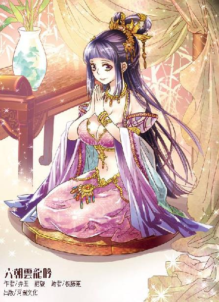

第56集·五彩天石
汉国篇（8/28）
出版日期：2014-11-20
【本集内容简介】
云苍峰来到洛都与程宗扬商讨要事，两人决定趁着天子卖官职的机会，往汉国朝廷上多塞几个自家人进去，却不料误打误撞，云家举荐的人才正是天子极想笼络的大人物！
吕不疑决定杀除阳泉暴氏，程宗扬和卢景欲反将一军，双方各怀鬼胎，但吕氏调动四尉兵力，实力相差悬殊，众人只能四散分逃。而留在城中的高智商等人被吕家死士杀进屋内，只有老兽人稍能抵挡，情况危急……
※ ※ ※ ※ ※

封面人物：赵合德
洛都北依邙山，南邻洛水，地势北高南平。从北宫的阙楼望去，数不清的宫阙殿宇依地势逐次升高，重重叠叠直上天际，最北部的永安宫台陛与正中的德阳殿殿顶几乎平齐，望之如在云端。
吕后立在阶前，一手拿着几枚金灿灿的稻粒，逗弄着去喂架上的五彩鹦鹉，她梳着云髻，穿着长长的黑色冕服，淡淡道：“你说，阿寿是用香粉传讯？”
在她身后，那个容貌平常的中年妇人开口道：“襄城君一个字未曾写完就停下手，似乎是被人下了禁制。情形不明，我只留话让她入宫，便告辞了。”
吕后冷笑道：“那老贼倒是好手段，竟然找到阿寿。”
胡夫人道：“只怕与那老贼无关。”
“哦？”
胡夫人摹仿着襄城君手指的动作，在空中勾勒出那个字迹，是一个未写完的“龍”字。
望着她指尖的动作，吕后眉梢缓缓挑起，最后皱起眉头，有些意外地说道：“龙宸？”
胡夫人点了点头。
吕后神情变换，从疑惑，到忿然，最后变得冷峻异常。整座大殿鸦雀无声，旁边的宫人内侍仿佛都感受到殿中肃杀的气氛，一个个都低下头，连大气也不敢喘一口。
那只鹦鹉歪着头剔着羽毛，眼见女主人的手掌停在半空，手心放着稻粒，它低下头，用又弯又尖的长喙去啄稻粒。忽然那只白皙优美的手掌一紧，拧住它的脖颈，接着往地上一掼，五彩的羽毛沾着鲜血一阵乱飞。
吕后恨声道：“这些该死的蠹虫！”
※ ※ ※ ※ ※
“龙宸？”
屏风后面，程宗扬也是一脸的困惑。
小紫打了个小小的呵欠，“你以为她要说什么？”
“难道不是因为宫里来人，她觉得见了救星，暗中传讯说她被咱们控制了，想让人把她救走？”
小紫挑起嫣红的唇角，“这么好玩，她怎么舍得走呢？”
“哈哈。”程宗扬打了个哈哈，口气中充满了不信。
小紫笑吟吟道：“程头儿，你放心好了。她就是死了也不会出卖我们的。好了，我要走了。”
程宗扬立刻炸毛，一把拉住她，“你还想跑？去哪儿？”
“人家去鬼市买点东西。”
“鬼市？”
洛都九市自己早就背熟了，从来没听说过还有个鬼市。
“就在北边啊，离城很近的，一会儿就回来。”
“一会儿是多久？”
“大概到明天早上吧。”
“那不行。我要跟你一起去。”
小紫眨了眨眼睛，“你老婆来了，难道不去接她吗？”
程宗扬纳闷地说道：“我老婆不就是你吗？”
“大笨瓜。”
小紫抱着雪雪，然后唤上惊理，从密道离开。
程宗扬怔了片刻，然后奔进奥室。室内只剩下罂粟女，此时正在整理女主人带来的铁箱。那只机械蜘蛛已经分解成零件，逐一放在小格子内进行修复。昨日刺杀韩定国时，蜘蛛多处受损，腹内安装的毒针也消耗一空，要大修一遍才能继续使用。
程宗扬劈头问道：“云三爷来了吗？”
“按照前天舞都传来的消息，路上顺利的话，这会儿就快到洛都了。”
程宗扬知道云苍峰近日会来洛都，却没想到会是今天。自己能把云如瑶讨到手，可以说是千辛万苦，九十九个头都磕了，也不差这一个。现在云三哥亲自来洛都，说什么也要去接。
“云如瑶——你们少奶奶是不是一起来了？”
“这奴婢就不知道了。”
“别摆弄那个了！赶紧通知老敖，让他带车过来——别用官车！”
罂粟女扣上铁箱，“主人的衣服要换吗？”
为了进出襄城君府，程宗扬身上穿着府中奴仆的青衣。如果让云苍峰看见自己来洛都没几天就给别人当了家丁，少不得要当场悔婚。
“来不及了。你去找老敖，剩下的不用管。”程宗扬说着唤道：“来人！”
红玉小心翼翼地过来，“公子。”
“去给我找几件衣服。叫孙寿过来，给我梳头。”
“是。”
不多时，襄城君带着一股香风进来，她跪在程宗扬身后，拿起自己的象牙梳子，细致地给他梳理头发。
程宗扬心下安定了一些，襄城君府位于城南，邻近洛水，等敖润赶来，驱车渡过浮桥也用不多少时间。
程宗扬想着问道：“洛都是不是还有个鬼市？”
襄城君半是惊讶半是娇媚地轻笑道：“公子连鬼市都知道，果然是苏姨的心腹呢。”
她一边梳着程宗扬的头发，一边道：“鬼市在邙山脚下，每隔十日才开市一次。虽然也是市集，却与其他九市不同，要到子时开张，天一亮就关门。勉强说的话，算是黑市。里面卖的都是些见不得光的东西。”
程宗扬心里打鼓，死丫头不会是想去黑吃黑吧？
“卖的是赃物吗？”
“什么都有。各种奇珍异宝，法器灵兽，珍闻秘辛，甚至还有人口交易。”襄城君道：“奴家小时曾随苏姨去过一次，苏姨离开后，就没敢再去过。公子可是要去鬼市吗？”
“是你紫妈妈要去。”程宗扬一边说一边从镜中观察她的反应。
襄城君担心地说道：“鬼市鱼龙混杂，妈妈怎能自己去呢？”
“她带着惊理呢。”
“啊！”襄城君大吃一惊。
程宗扬镇定地说道：“怎么了？”
襄城君看了看周围，确定罂粟女不在室内，才低声道：“奴家还没有来得及禀知公子——那个惊理，是龙宸的人。”
“你怎么认出她的？”
“奴家以前见过她。”襄城君道：“外子以前和龙宸的人有过交往，那个惊理当时就在其中，只是奴家在屏风后，她却未见过我。”
“吕冀还和龙宸的人打过交道？”程宗扬笑道：“你是堂堂的封君，襄邑侯的夫人，还怕什么龙宸？”
“公子有所不知，”襄城君犹豫了一下，小声道：“苏姨在时，洛都颇有些狐族的同胞，但这些年逐渐消失殆尽，只余下奴家一个，其他人大都是死在龙宸手中。”
“为什么？龙宸和狐族有仇吗？”
“奴家也不知晓。只知道龙宸一直在暗中追杀狐族后裔，若非奴家有封君的身份掩饰，没有引起他们的疑心，说不定早已被他们找到杀死。”襄城君心有余悸地说道：“遇到公子之前，奴家还一直担心，苏姨是不是也……”
难怪襄城君在两名侍奴面前那么乖巧，原来还有这层关系。她昨晚已经露出狐尾，身份再无法掩饰，因此脱离惊理的视线之后，她立刻设法示警救助。
“那位胡夫人，也是狐族的人？”
“不是。她是太后的心腹，以前和苏姨私交极好。苏姨离开后，多亏她照顾奴家，后来还说服了太后，让吕孙两家结为姻亲。”
程宗扬心下暗惊，襄城君嫁的是谁？吕冀。
吕冀是谁？太后的嫡亲弟弟！
胡夫人能说服太后，把一个狐族女子嫁入吕氏后族成为正妻，她对太后的影响力可见一斑。
太后的心腹女官，与苏妲己私交极好……难道她是苏妲己那个未曾露面的结拜姐妹，九面魔姬？
程宗扬试图回想那位胡夫人的相貌。自己以前在摄像机中已经见过她，只是那位胡夫人貌不惊人，又站在太后身后，形如婢妇，很容易把她忽略掉。程宗扬思索半晌，赫然发现自己根本记不起来她究竟长得什么模样，只有一个平平常常的模糊印象。
襄城君道：“龙宸的人最是冷血无情，全无情义可言，只要出够价钱，随时都会翻脸不认人，公子千万不能相信她。”
程宗扬回过神来，襄城君传讯的举动自然瞒不过收取了她魂魄的小紫，只不过自己原以为她是向宫里来的人传讯，揭穿自己和小紫的身份，没想到她怀疑的却是惊理。
襄城君压低声音道：“何况紫妈妈的身份，无论如何也不能被龙宸知道。”
程宗扬心下诧异，难道她看出了小紫压根与她那位苏姨无关？也难怪，死丫头似乎根本没打算隐瞒什么。对小紫来说，襄城君就是一只煮熟的鸭子，怎么也飞不出她的掌心。
“你紫妈妈的身份怎么了？”
襄城君疑惑地看了他一眼，“公子不知道吗？紫妈妈是最纯正的天狐血脉，万一被龙宸的人察觉，只怕会引来危险。”
程宗扬听得莫名其妙，死丫头什么时候改的血型？竟然还是天狐血脉？
“你没搞错吧？”
“奴家绝不会认错。”襄城君眼中泛起一缕异样的光彩，“妈妈曾经让奴家尝过她的一滴血——那是最纯正最高贵的天狐血脉，拥有数不尽的神通和无穷变化……”
襄城君禁不住用舌尖舔着唇瓣，眼中流露出痴迷的神情，仿佛在回味那滴天狐之血的美妙滋味。
程宗扬终于明白过来，襄城君确实没有出卖他和小紫。因为在她眼里，自己和小紫都属于狐族一脉，是真正的同族。其他人无论与她再亲近，都是非我族类的外人。狐族生性多疑，但因为数量稀少，却是一个很注重血缘的种族，确认了他们的狐族身份之后，襄城君再多疑也不会疑心到他们二人头上，只是对罂粟女和惊理颇具戒心。
同样，狐族更在意血脉的等级，血统越纯正，在狐族中的地位就越高，传说中的天狐血脉是狐族中当之无愧的王者。即使小紫没有收取襄城君的一魂一魄，只要显露出天狐血脉，就足以让襄城君服服贴贴。
程宗扬纳闷的是，小紫用的什么手段，让襄城君对她的“天狐血脉”深信不疑？小紫从苏妲己身上取来的血只有一滴，这会儿还好端端封在琥珀里，难道她这些日子也遇到了狐族中人？
“奴家已经泄漏了身份，只怕龙宸很快就会来人。”襄城君道：“奴家死不足惜，可紫妈妈若是遇险，奴婢就百死莫赎了。”
“不用再说了。这事有你紫妈妈安排。你只要自己小心些，别让她们看出你已经知道了她们的身份。”
襄城君松了口气，“奴家知道了。”说着媚艳地笑道：“公子放心，奴家自不会让她们看出端倪。”
襄城君将程宗扬的长发束在头顶，用一块青布方巾裹好，然后戴上一顶轻便的纱冠。
红玉取来衣物，双手举过头顶。襄城君府中的衣物自然是极尽华丽。程宗扬挑了件不那么晃眼的，由襄城君亲手替她换上。
襄城君屈膝跪在他面前，帮他系着衣带，水汪汪的美目又湿又媚，腻声道：“公子……”
程宗扬在她妖艳的粉颊上捏了一把，“乖乖在这里等着。”
※ ※ ※ ※ ※
马车驰出津门，敖润背着铁弓，骑在一匹高头大马上，另一边则是神情剽悍的吴三桂。
程宗扬坐在车中，车帘高高卷起，一边看着几张红纸书写的礼单，一边庆幸地说道：“幸好冯大法够仔细，先带了人在城外迎接，还准备了礼物。老敖，这些东西是你去买的？”
敖润道：“洛都市面上货色齐全，没费多少事就买来了。”
“是吗？”程宗扬打趣道：“我怎么听说是人家延香买的，你就跟在后面打个杂什么的。”
敖润脸上一红，“那啥……她是本地人，对洛都的市面比我熟，东西可都是老敖扛的。”
“咦？”程宗扬拿着礼单道：“这里面怎么还有香包、水粉呢？老敖啊，你不会是给人家买东西，还顺手记到我的账上了吧？”
敖润像火烧屁股一样从鞍上站起来，脑袋几乎伸到车窗里，埋怨道：“冯大法这干的什么事！那些水粉明明是我自己掏的钱……”
吴三桂笑道：“老敖，程头儿诈你呢——礼单上压根就没水粉。”
敖润一张老脸红得猴屁股似的，讪讪道：“程头儿，你这就不厚道了。知道老敖不识字，还这么蒙我？”
程宗扬笑道：“要不这样你能说实话吗？”
敖润臊眉搭眼地说道：“我也没别的心思……就是想着辛苦人家好几天，心里过意不去，给她买了点水粉……”
“就一点水粉？”
“还有条帕子……”敖润耷拉着脑袋道：“她没要，我又拿回来了。”
“瞧你那点出息！”吴三桂道：“她不要你不会跪下来求她？你跪到天亮试试，我就不信她不要。”
敖润半信半疑，“万一她还不要呢？”
程宗扬道：“那你就没戏了。”
敖润心里一凉，吴三桂安慰道：“放心吧，男儿膝下有黄金，只要你一跪，那比黄金还值钱。”
“老吴，你以前跪过？”
“没有，没有！”吴三桂头摇得拨浪鼓似的，“我丢不起那人。”
敖润摘下铁弓，“姓吴的你别跑！老子跟你大战三百回合！”
笑闹间，一辆牛车“吱吱呀呀”行来，赶车的是一名老汉，车上坐着一个少女，虽然布衣荆钗，一张娇美的面孔却宛如桃花，水灵灵的双眼像是会说话一样。看到有人笑骂追打，她抿起红唇，露出巧笑嫣然的美态。
程宗扬趴在车窗上，用力吹了声口哨，眉飞色舞地说道：“这个不错哎！又水灵又鲜嫩……咦？你们这是什么表情？”
敖润和吴三桂停住打闹，牵着马站得跟棍子似的，使劲给程宗扬使眼色。
程宗扬回过头，心脏猛然一跳，险些从嗓子里蹦出来。
车旁立着一匹铁黑色的战马，一名女子坐在马上，一手握着刀柄，身体微微前倾，正蓄势待发，一双眼睛紧盯着自己露在车窗外的脑袋，视线在自己脖颈上来回游移，似乎在寻找下刀的位置。
程宗扬赶紧收回脑袋，干笑道：“原来是云大小姐……多日不见，大小姐还是那么威……英武，哈哈哈哈。”
云丹琉轻蔑地冷哼一声。
“云老哥呢？你们没一起吗？”程宗扬叫道：“冯大法这家伙办得什么事！他接人接到哪儿去了？”
“不用找人帮你。”云丹琉冷冷道：“我来就是告诉你一声，想娶我姑姑，下辈子吧！”
说着一股狂飙卷起，那柄堪比青龙偃月刀的长刀横劈过来，寸许厚的车厢像纸扎的一样迎刃而裂。
前面赶车的刘诏不知底细，还稳当当地看笑话，没想到这姑娘身材够火，脾气比长相还火，说砍就砍，来不及出手，一半的车厢就没了。
程宗扬玩命地往后一靠，撞破车厢，滚到车下，看起来就像被云丹琉一刀劈出来似的，在地上一连滚了十几圈，刚换的衣服沾满泥土，连头冠也掉在一边，灰头土脸，狼狈不堪。
程宗扬心头火起，叫道：“云丫头，有种你就砍了我！”
“你以为我不敢吗！”
云丹琉马刺一磕，坐骑向前冲出，接着俯下身，长刀往身后一荡，蓄势挥出。
程宗扬二话不说，使了一招懒驴打滚的精妙功夫，直接滚到她马蹄下面。云丹琉啐了一口，回刀往马腹下挑去。就在这时，她手腕忽然一紧，被人握住，接着一股大力涌来，硬生生将她从马鞍上扯了下来。
云丹琉连忙踢开马镫，长刀重重斩进土中，单膝跪地，稳住身形，谁知握住她手腕的手掌也同时用力，等于是两人合力一刺，长刀整个没入土中，只露出一截刀柄，像拴马橛一样。
云丹琉立刻撒手，挺肘往程宗扬胸口击去。程宗扬在地上滚得浑身是土，索性破罐破摔，半坐在地上，抬手挡住她的肘击，接着一绞，缠住她的手臂，把她往地上扯去。
云丹琉身体失去平衡，侧身倒地，程宗扬刚撑起身体，就看到云丹琉那条修长的美腿猛然一抬，毫不客气地往自己裆下撞去。程宗扬冷汗当时就下来了，这下要被她撞中，保证比肉馅还碎，比司马迁还干净，自己随便擦擦就可以拜徐璜当干爹，入宫修行了。
危急关头，程宗扬爆发出强大的潜力，整个人前移半尺，云丹琉撞向他裆下的一膝错过要害，重重撞在他屁股后面。程宗扬往前一栽，结结实实扑到云丹琉身上，险些把云丹琉砸到土里。
云丹琉双臂被他缠住，这一下撞了个满怀，怒道：“滚开！”一边挺身想把他掀开。
“滚个屁啊，你压到我手了！”
程宗扬身体一沉，硬是把她压了回去，他刚拔出手，试图起身，接着身下一动，云丹琉又屈膝撞来。程宗扬魂飞天外，赶紧脚下一盘，缠住云丹琉的大腿。
路上泥土飞扬，两人手脚都纠缠在一起，像是打结了一样，忽上忽下不停翻滚。战况激烈而又胶着，一时看不出是谁占了上风。
吴三桂和敖润面面相觑，敖润道：“这不成啊，得把他们分开。”
吴三桂道：“你插得进去手吗？”
“不插手也不行啊，万一程头儿输了呢？”
吴三桂低声道：“输了——也是程头儿占便宜。”
敖润恍然大悟，“哦……”
刘诏道：“那……咱们就这么看着？”
“嘘……蹲下！”
三个人蹲下来，一边装作系脚带，一边偷偷看着场中。三个人就那么看着程宗扬和云丹琉越滚越远，越滚越远……最后“噗通”一声，两人搂抱着摔进路边的沟渠里面。
三个人赶紧奔过去，只见渠中泥水四溅，云丹琉怒喝道：“姓程的混账！给我滚开！”
“你让我滚我就滚，那我多没面子啊！”
三个人连连点头，“好了好了！程头儿占上风了。”
“又来！云丫头，你朝哪儿踢！”
“去死吧！”
“你给我躺下！哈哈哈，跟我斗！告诉你，以前我是让着你，真打起来，信不信我一只手就能摆平你！”
“天龙碎金拳！”
“雕虫小技！看我的如来神掌！”话音未落，程宗扬便大叫起来，“我干！这是什么东西？冯大法的手雷怎么在你手里！”
“去死吧！”
“别乱扔啊！我干！”程宗扬浑身是泥地从渠中跃出来，一头扎在地上，两手抱住脑袋。
接着一只黑乎乎的铁罐子飞了上来，正落在程宗扬脑袋旁边。
“不好！快躲！”
敖润一手一个把吴三桂和刘诏按在地上，然后脚前头后，像在冰面上滑行一样，飞身去踹那只铁罐。
那铁罐应声飞出十几丈远，把路旁一间瓜棚砸出一个大窟窿。
程宗扬这才想了起来，手雷里面用的是龙睛玉，要冯源的火法才能激发。程宗扬爬起身，悻悻道：“臭丫头，差点儿被你吓死……”
敖润叫道：“程头儿小心！”
程宗扬抬起头，“怎么了？”
云丹琉从渠中爬上来，她外衣被撕破大半，里面贴身的软甲也被泥水浸湿，此时双目含怒，拿起一只手雷朝程宗扬后脑勺上猛砸过去。
程宗扬猝不及防，闷哼一声，直挺挺扑倒在地。
云丹琉飞身握住刀柄，用力一拔，提刀在手。
三个人都冲了过去，有的叫：“刀下留人！”
有的叫：“快拦住她！”
吴三桂叫道：“杀人啦！快来人啊！”
敖润扑到程宗扬身上，叫道：“有种你先杀了我！”
云丹琉玉颊时红时白，最后一跺脚，飞身离开。
※ ※ ※ ※ ※
云苍峰从车上跳下，急步走到程宗扬面前，“怎么样？”
程宗扬靠在变成敞篷的马车上，头上缠着绷带，两只鼻孔里一边塞了一个布团。他勉强撑起身体，又倒了回去，有气无力地摆摆手，“云老哥，你来了。我还好……就是有点晕……”
“这丹琉！唉……”
冯源一个眼圈青着，胳膊上吊着绷带，一瘸一拐地走过来，“程头儿，你没事吧？”
程宗扬闭着眼道：“你没事就好。老冯啊，我想了想，这手雷咱们还是得轻便化，十好几斤的铁疙瘩，挨一下谁受得了？咦？你也受伤了？”
云苍峰道：“都怪老夫，以为丹琉只是闹闹脾气，也没有当回事，路上让她打的前站，没想到她先打伤了冯兄弟，又……唉……”
云苍峰叹了半天气，然后问道：“丹琉去哪儿了？”
吴三桂上前一步，“云三爷放心。大小姐发完脾气就走了。家主头上受了些伤，要找个大夫看看，要不咱们先进城吧。”
“对！对！先进城！你们把程小哥扶过来，坐我的车。”
程宗扬也没有推让，几人扶着他送上云苍峰的马车。云苍峰放下车帘，用随身的竹筒给他倒了杯水。
程宗扬接过竹杯，然后盘膝坐了起来。
“伤得重不重？”
程宗扬苦笑道：“后脑勺被大小姐砸了一下。还好大小姐没打算要我的命，不然如瑶就得守望门寡了。”
“丹琉这性子啊。她从小就和她姑姑最亲，对你可能有点误会。你放心，等她回来，我会好好教训她。”
“千万别！你一教训，她又把气撒到我身上了。”
“对了，我听说你如今有了官身？”
“没错。云老哥纵然不来，我也要请你来洛都一趟。”
程宗扬低声说了天子私开西邸，贩卖官爵的勾当。云苍峰大为吃惊，“竟然有这种事？你如今是何官职？”
“六百石的大行令。”
“好。骤然成为二千石，未免令人骇目，六百石不高不低，起步正好。”
“这咱们都错了。我听徐常侍的意思，买卖二千石都不算什么新鲜事。我的意思是，你们选个人，我来牵线，直接弄个二千石，先把舞都太守的职位拿到手里。”
“宁成呢？”
“天子有意召他入京——这件事最好由云老哥派人知会宁太守一声。”
徐璜将此事透露给程宗扬，是有意向宁成所属的刀笔吏示好。程宗扬决定由云家出面，则是向宁成暗示自己与云氏的姻亲关系密不可分。
云苍峰自然会意，当即在车上写了一封书信，交给随从带回舞都。
※ ※ ※ ※ ※
云氏商号遍及六朝，在洛都明里暗里也有四五处生意，车马住处早已安排停当。程宗扬有伤在身，路上与云苍峰将最要紧的几件事商议妥当，便即告辞，至于接风洗尘这些场面事，都交给吴三桂等人去办。
吴三桂在南荒便与云苍峰等人同行，后来又常住江州，与云氏来往颇多，和云苍峰也算老相识了，双方异地相逢，心情大好，当晚都一醉方休。
冯源那一顿打挨得最冤，家主诸事缠身，他一早就带着礼物出城迎接，遇见云丹琉还在高兴，什么“两家结为秦晋之好”、“百年好合”之类的好话说了一堆，谁知就惹恼了云丹琉。被云大小姐狠揍一顿不说，连防身的手雷也成了云丹琉的战利品。
回到住处，请出哈老爷子，老兽人不知从哪儿弄来一堆乱草，用铡刀一铡，在装饲料的马槽里搅成糊状，把冯源包得跟粽子一样。程宗扬实在是怕了哈爷的兽医手段，赶紧表示自己就一点皮外伤，扛一扛就过去了，根本不劳哈爷费心。
哈迷蚩不由分说，把他往床上一按，将一把快刀扔到炉子上烧得通红，然后连割带燎把他伤口的头发弄掉一片。程宗扬顶着脑后的秃瓢，想死的心都有。汉国人都是束发，秃成这样，挡都挡不住，还不如像冯源一样包成粽子得了。
程宗扬用手捂着脑袋，灰溜溜回到院中，忽然听见一阵笑闹。他停住脚步，往厢房一看——小胡姬伊墨云正在和高智商一起玩他那条狗尾巴呢。
高智商趴在榻上得意洋洋地摇着小尾巴，一脸臭屁地说道：“没见过吧？别人想要还要不来呢。”
小胡姬笑道：“别动，我给你扎个蝴蝶结。你要粉红的还是鹅黄的？”
“每样扎一个，反正有的是地方！”
伊墨云一边扎一边道：“好可怜的小狗狗……”
程宗扬听得直摇头，现在的年轻人啊……这要是让法海撞见，非一道天雷劈死他们不可。
富安捧着茶壶出来，他脸上青肿未消，更显得獐头鼠目，招呼道：“程头儿你回来了，雁姑娘都等急了。”
“谁？”
“雁儿姑娘啊。她们和云三爷前后脚到的。”
程宗扬风风火火进了内院，只见蛇夫人正站在廊下，指使着延香从马车上搬东西。
“你们怎么来了？”
蛇夫人俯身施礼，妖声妖气地说道：“游冶台的事都已经布置停当，眼下没有什么事可做，雁儿姑娘安排了人照看，就领着我们来了。”
雁儿闻声出来，屈膝道：“公子。”
程宗扬拉住她的手，“我不是让你们多陪陪如瑶吗？她身边没有个得力的帮手，我也放心不下。”
雁儿笑而不语。
程宗扬明白过来，“不会吧！”
程宗扬闯进室内，云如瑶正倚在榻上看书，阮香凝跪在一边，低着头，一手挽着衣袖，细致地沏着茶。
见程宗扬进来，云如瑶放下书卷，笑道：“程郎。”
程宗扬叫道：“怎么回事？你怎么又跑出来了？云老哥要是知道，非跟我拼命不可！”
云如瑶笑道：“六哥去了晴州，我等三哥启程，告诉下人说去七里坊暂住几日，才跟着来的。过几日我便回去，有雁儿帮着掩饰，不会有人知晓。”
“万一路上出点事，我还活不活了？”
云如瑶嘟着嘴道：“人家好不容易来一趟，你还抱怨人家。”
“我不是担心你吗？算了，反正人已经来了。是杀是剐我都挨着吧。”程宗扬蹲下身，握住她的手，“身子怎么样？”
“还好。”
阮香凝道：“这几日天气转凉，少夫人又有些畏寒呢。”
程宗扬笑着捏了捏云如瑶的鼻子，“正好给你补补身子。”
云如瑶忽然搂住他的脖颈，把他脑袋转过来，惊叫道：“你这是怎么了？”
程宗扬苦笑道：“还不是你的好侄女，那么大的铁疙瘩都往我头上砸。”
“丹琉？”云如瑶顿足道：“她怎么能这样！”
“还是媳妇疼我。”程宗扬出主意道：“明天你把她叫来，好生摆出姑母的架子，狠狠打她一顿屁股。”
云如瑶轻轻摸了一下，柔声道：“痛不痛？”
程宗扬笑嘻嘻道：“让你一摸就不痛了。”
云如瑶脸上一红，低头咬住唇瓣。
程宗扬张臂抱住她，在她玉颊上亲了一口。
“不要……”云如瑶推开他，“你身上还有伤。”
程宗扬理直气壮地说道：“伤的是大头，又不是小头。”
拉扯间，程宗扬忽然想起一事，“等一下。”然后唤道：“蛇奴。”
蛇夫人闻声进来。
程宗扬道：“你知道鬼市吗？”
蛇夫人毫不犹豫地说道：“知道。”
“你紫妈妈在鬼市，你去见她，看她有什么吩咐。”
“是。”
云如瑶道：“小紫妹妹可好？”
“什么都好，就是心情不太好。”
“怎么了？”
程宗扬叹道：“都怪她老爹作孽太多，把紫丫头给坑了。”
程宗扬一边说一边去解云如瑶的衣带，云如瑶推开他的手，“不要。你还是歇息几日，等养好了伤，再……”
程宗扬坏笑道：“是不是还需要一点情调？凝奴。”
阮香凝收拾了茶具，正要退下，闻声连忙俯身屈膝。
程宗扬一边和云如瑶调笑，一边头也不回地吩咐道：“把衣服脱了，过来伺候。”
阮香凝含羞应了一声，低着头宽衣解带。
“雁儿，你也别跑！把门关上，过来给少奶奶宽衣。”
雁儿红着脸插上门，过来道：“请少夫人更衣。”
程宗扬拥着云如瑶香软的身子笑道：“你看她们多乖。哪儿像你，还推三阻四的。”
雁儿道：“我们是奴婢，哪里能跟少夫人比。”
云如瑶拉着衣服笑道：“你先脱。”
雁儿一边后退一边摇手，“这不成，奴婢在外面伺候。”
程宗扬一手拉住她，笑道：“有一个算一个，谁都别跑。”
被主人一拖，雁儿再使不出力气挣扎，她羞答答解开衣襟，一时间满室春光旖旎。
就在这时，外面忽然传来一阵急切的拍门声，敖润扯着嗓子道：“程头儿！四爷回来了！”
斯明信为高智商误伤杀人的事去找郭解，一去多日，杳无音信，此时突然回来，程宗扬不敢怠慢，找了块头巾当作包头，裹住头发，匆忙出门。
“怎么样？四哥人没事吧？”
“四爷没事，只是他还带了人来。”
“谁？”
敖润兴奋地说道：“郭解郭大侠！”
程宗扬打了个激灵，竟然是郭解亲自上门？难道是找麻烦的？
“不会吧？”
“我亲眼看见的！”敖润啧啧赞道：“郭大侠果然豪壮！比老敖还高了一个头，那气势！啧啧！”
“他自己？”
“就带了一个随从，别的没看到。”
就两个人登门，应该不会是来砸场子的吧？程宗扬心里嘀咕着，快步走入厅中，只见席间并肩坐着一高一矮两名汉子，却没有见到斯明信。
斯明信不喜露面，程宗扬也不以为怪，紧接着他的目光就被堂上那名大汉吸引，不由暗暗喝了声彩。
难怪敖润会连声赞叹，那大汉果然生得雄伟异常，虎背熊腰，身材壮硕，即使屈膝跪坐，也和自己差不多高，双肩又宽又厚，臂上隆起的肌肉就像里面揣了只排球一样，如果站直，身高恐怕要超过两米。相比之下，他旁边的男子身材短小，貌不惊人，怎么看都不起眼，此时双手放在膝上，两肩平齐，背脊挺直，坐姿中规中矩。
程宗扬扫了一眼，便大步上前，开口笑道：“四哥的朋友就是我的朋友！老敖，让厨下准备酒菜！”
敖润应了一声，飞跑着下去吩咐。程宗扬这才抱拳，对那名壮汉道：“郭大侠！久仰！今日一见，果然是名不虚传！”
那名壮汉双手按膝，雄躯纹丝未动，沉声道：“在下符离王孟。”
程宗扬一怔，却见旁边那名身材短小的男子微微俯身施礼，开口道：“在下轵人郭解。”
那男子口气中没有故意的炫耀，也没有刻意的谦逊，就像路过时被人询问一样，平平常常地通报了姓名。
程宗扬呆了半晌，眼前的男子穿着一件灰扑扑的粗布衣裳，相貌平平，头上结着一顶半旧的青布裹头，腰间插着一柄短刀，脚上穿的草鞋，怎么看都没有什么出众之处。
郭解名头之响，可以说是两千年间唯一的郭大侠。有道是人的名、树的影，郭解偌大的名头，在程宗扬想象中，肯定是龙行虎步、豪气逼人，举手投足都有一代霸主的峥嵘气势——就和王孟的模样差不多。没想到真实的郭解只是个平平常常的普通人。
虽然很不礼貌，程宗扬还是情不自禁地问道：“你是郭解郭大侠？”
郭解道：“不敢称大侠，只是郭解。”
王孟重重哼了一声，显然对他的无礼颇为不满。
程宗扬定了定神，赶紧赔罪道：“在下眼拙，还请郭大侠恕罪。”
郭解道：“无妨。”
“还是郭大侠宽宏大量，哈哈……”
程宗扬打了个哈哈，掩饰方才的尴尬，这才入席跪坐，说道：“前日之事实在是得罪了。小徒顽劣，酒后失手伤了令外甥，郭大侠你看……”
“当日之事我已知晓，此事终究是吾儿之过。”郭解摇头道：“因酒丧命，实为不值。”
“依郭大侠之见，此事该如何了结？”
“来之前我去看过家姐，亲手收敛了吾儿的尸骨，为其送葬。”郭解说道：“此事就此了结。”
程宗扬原本准备了一肚子的言辞，没想到郭解会如此直接了当，愣了一下才长松了一口气。
历史上郭解行侠仗义，终究以武犯禁，被武帝诛杀，程宗扬不知道六朝的历史会出现怎样的扭曲，但出于理智，他并不想与这位大侠有太深的交往。毕竟汉国局势已经够乱，再牵涉上郭解，很容易引火烧身。不过明哲保身并不意味着他对郭解没有兴趣。郭解名垂后世，单以名声而言，古今大侠无人能及，但此时亲眼见到真人，与他的名声相比实在是反差巨大——他旁边王孟那模样才真正对得起大侠的名头。
直到此时郭解说出这番话来，程宗扬才收拾起患得患失的心情，认真打量起这位大侠来。
“郭大侠如此高义，在下实在是感激不尽。”说着程宗扬又道：“也多亏了四哥解释。”
王孟在旁冷冷哼了一声，态度颇不以为然。
程宗扬不知自己说错了哪句话，略一错愕，只听郭解道：“我与他虽然有些过节未曾了结，但义之所在，天下趋之，终不能以私怨而坏大义。”
程宗扬听得愣神，他还以为斯明信与郭解交情不浅，才特意出面，这会儿才听出来斯明信与郭解非但没有什么交情，反而有些没有解开的过节。话说回来，郭解与斯明信过节未消，还能持平而论，甚至律己而宽人——程宗扬有点明白这个貌不惊人的汉子为何会被公认为当世大侠了。
宅中有大宋的禁军亲自掌勺，比一般的大厨也不逊色。不多时，便送来几样酒菜，敖润还抱了一只酒瓮，兴冲冲过来斟酒。
程宗扬道：“郭大侠名动天下，在下仰慕已久，难得今日光临寒舍，大伙一醉方休！”
敖润当即给王孟满上，“郭大侠，请！”
王孟极为豪放，举樽一饮而尽，然后才道：“我是王孟！”
程宗扬笑道：“那位才是郭大侠，这位是王侠士。”
敖润也吃了一惊，弄清原委才知道自己闹了乌龙。他连忙举瓮给郭解满上，一边自嘲道：“瞧我这眼力劲儿……”
敖润抱着数十斤的酒瓮，双臂稳若磐石，酒水从瓮口一条细线倾下，稳稳注入樽中，没有溅出半点。
郭解赞道：“好身手！”
敖润道：“郭大侠，我敬你一杯，当是赔罪。”
郭解歉然道：“郭某从不饮酒。”
“哪里有大侠不喝酒的？”程宗扬举樽笑道：“郭大侠，我也敬你一杯！”
郭解抱拳道：“心意已领，但郭某向来酒不沾唇，还请见谅。”
程宗扬将信将疑，但郭解既然这么说，他也不好勉强，毕竟刚因为酒上的事惹来一场麻烦，再因此误事，那就太划不来了。程宗扬放下酒樽说道：“既然如此，我便以水代酒。郭大侠，请。”
郭解遥遥举碗，饮了口白水。
程宗扬道：“前些日子听说郭大侠遭小人构陷，被迫迁徙。如今身处异乡，不知可还安好？”
郭解道：“郭某惯于奔走，自是无妨。只是我那些兄弟素来纵横恣意，受不得拘束，未免辛苦。”
“说到郭大侠的门客，前些天我在伊阙遇到郭大侠门下的豪士，果然是慷慨豪勇的英雄好汉！”
程宗扬眉飞色舞说了当日在伊阙看到的一幕，尤其是那名豪士杀人之后不避不逃，坦然留下来顶罪，说着连声赞道：“好汉子！”
郭解却毫无欢容，他眉头紧锁，微微俯身施了一礼，然后道：“多谢程兄相告。此事郭某还是初次听闻。那位兄弟因我而被官府捕拿，我却一无所知，实在是惭愧。还请程兄细述他的相貌，我好设法迎他出狱。”
程宗扬边想边道：“那人是个大胡子，身体很壮……对了，和他一起的少年把杨家那人的头颅带走了。”
郭解扭头看向王孟，王孟道：“数日前有几名少年跃马门外，称已为郭大侠除去杨家子，但未留名姓，想来就是这些人了。”
“找到他们，此事因我而起，不要牵连旁人。”
“诺。”
程宗扬道：“老敖，去把那小子叫来，让他给郭大侠磕头赔罪。”
“不必。郭某今日非为此事而来。”
“那是……”
郭解双手按在膝上，缓缓道：“听闻前辈在此，郭某特来请见。”
“前辈？哪位前辈？”程宗扬一头雾水。
“昔日游侠儿，洛下刘谋。”
程宗扬一拍大腿，“你说老头啊！他叫刘谋？”
“当初纵横洛下时，前辈自称刘谋。”
程宗扬苦笑道：“不是我推托，实在是你这位前辈行事太出人意表——这都四五天没回来了。”
“不知前辈去了何处？”
“这就难说了，不过我今日正好在城东一处陋巷见过他。”
“前辈在城东？”
“没错，跟一群少年在赌钱呢。”
郭解感叹道：“果然是前辈会做的事。既然如此，郭某就告辞了。”
说着郭解长身而起，向程宗扬抱拳施礼，又对旁边的敖润揖了揖手，说了声“有劳。”
程宗扬刚要开口，头顶忽然传来几声疾响。王孟身形一晃，雄壮的身躯半跪着挡在郭解身前，接着长剑跃然出鞘，在胸前搅出无数剑花。剑上“啪啪”几声震响，数枚疾射而来的暗器被长剑格开，四下飞散。
王孟双目如电，仗剑喝道：“哪里来的鼠辈！出来！”
王孟这一声大喝声震屋宇，檐上的瓦片都被震得微微颤动。
郭解拍了拍他的肩，示意他稍安勿躁，然后抬手往案上一丢，一枚漏网的暗器从他掌心滚落下来，在案上打了个转，却是一颗用来下酒的蚕豆。
郭解轻轻拍了拍手，“卢五，你既然来了，就下来吧。”
卢景从梁上飘下，拿起郭解未喝的那杯酒，毫不客气地折进自己碗里。
王孟被他这种目中无人的态度激怒，“你——”
郭解却视若无睹，只道：“你也来了。”
卢景一口气喝完，抹着嘴巴道：“剧孟呢？”
郭解没有作声。
“瞧瞧，郭大侠从不妄言诳人，知道肯定不会说不知道，顶多不告诉你。”卢景翻着白眼道：“你告诉他，最多三天，他要再不露头，我就把他家拆了。”
郭解淡淡道：“好。”
郭解转身离开，王孟狠狠瞪了卢景一眼，卢景只当自己是瞎子，翻着白眼不理不睬。
程宗扬亲自送行，大门一开，才看到外面的僻巷中聚集了数十名汉子，每个人都佩着长刀，牵着健马。他们似乎是赶了数日的长路，浑身上下风尘仆仆，但一个个毫无倦意。
郭解吩咐几句，众人轰然散开，往各处里巷去寻找朱老头。郭解回身向程宗扬抱了抱拳，“告辞。”
“郭大侠稍等。”
敖润捧着一只沉甸甸的木匣飞奔过来。程宗扬道：“一点薄礼，不成敬意，还请郭大侠笑纳。”
那只木匣虽然不起眼，但份量十足，里面盛放的显然非金即银。郭解略一思索，将木匣交给王孟，然后道：“郭某来得匆忙，身上并没有带多少钱物，这些钱我便收下了。”说着吩咐道：“取我的坐骑来。”
旁边的门客当即牵来两匹马，交给敖润。
敖润连连摆手，“这怎么成？”
郭解道：“这些钱算郭某暂借，以十日为期，届时必定奉还。”
程宗扬原本想推辞，听到十日奉还又改了主意，“若是钱上的事，郭大侠尽管开口。在洛都，没有车马不行，这样吧，马匹我且留下，另给郭大侠配两匹挽马，一辆马车。郭大侠办完事，尽管来取马便是。”
郭解抱拳道：“承情。”
郭解一行走远，卢景揣着手过来，“如何？”
“想听场面话，还是听实话？”
“都听听。”卢景道：“老五不会说场面话，得跟你学学。”
“四哥才该学吧？他把人领来，自己就没影儿了，有这么待客的吗？”
“你要能教会他招待客人，我立马跪下来给你磕十个响头。”
两人说笑几句，程宗扬道：“郭大侠虽然貌不惊人，但胸怀大义，行事光明磊落，严己宽人，是条汉子！”
“这是实话？”
“场面话。”
“实话呢？”
“郭解貌不惊人，言不出众，说的道理也是老生常谈。但他能说到做到，这就是了不起的英雄好汉。”
卢景笑道：“这英雄也太简单了吧？”
程宗扬耸了耸肩，“大道理谁都会说，但做到的，能有几个？单是一个仗义疏财，就能难倒多少人？”
“你怎么看出来他仗义疏财的？我要没看错，他刚才是拿了你一笔钱吧。”
“就是他一点不客气地拿了那批钱，我才高看他一眼。”程宗扬道：“他随随便便就接了钱，说明他不把钱财放在心上。越是重财之人，才越会推三阻四，斤斤计较。”
卢景朝他头上拍了一把，“小子，你心眼儿太多了。咦？这是怎么回事？”
程宗扬抱着头道：“别问！敢问就翻脸！”
“皮外伤？那我就不问了。”
“五哥，你怎么来了？”
“姓唐的递了消息，要跟我结账，我来跟你商量。”
“正好老匡他们来了。五哥，你拿主意，咱们设个套，把钱全吞了，然后装作走人。”
“成。”卢景道：“我跟他们约的明晚。地方嘛……”
“放在进山那处镇子上。”
“好主意！”卢景一听就明白了，“等老四回来，我们先去踩点。”
“四哥去了哪里？”
斯明信阴冷的声音从头顶传来：“有人盯上这宅子，我去摸底。”
程宗扬抬头去看，斯明信的身影却鬼魅般出现在他身后，程宗扬扭过头，呼了口气，“吓我一跳……”接着他又警觉起来，“是谁？”
“朱安世的人。”
“怎么会是朱安世？”程宗扬随即醒悟过来，“延香！”
延香是有名的游女，认识的人不少，这些天与敖润一同出入，多半被有心人看到，通知了朱安世。
程宗扬有些头痛，朱安世与卢景有交往，却又和吕冀的关系不清不楚。被他的人盯上，既没办法向他透露底细，又不好动手对付他，只能装作不知道，这样一来，许多事情都缚手缚脚。
程宗扬心下权衡片刻，然后道：“四哥，要辛苦你一趟。”
斯明信抱着肩，没有作声。程宗扬知道，不是他摆架子，而是他不怎么喜欢说话，不作声就是答应了。
程宗扬开门见山地说道：“如瑶来了。这里来往的人多，不太安全，我想送她去上清观。”
斯明信点了点头。
“五哥，麻烦你看着点尾巴，有的话就甩掉。”
卢景道：“好说。”
半个时辰之后，一辆马车从院中驶出，赶在宵禁前驶离洛都。敖润驾车，云如瑶、雁儿、阮香凝同乘一车，程宗扬一身公子哥儿的打扮，骑马跟在旁边，斯明信和卢景则潜在暗处，不露踪影。
缺乏电力照明，使六朝昼夜分别极为明显，城中还有不少灯火，一旦出城，四周就是黑沉沉一片，整个天地都仿佛陷入沉睡。马车前虽然挂着灯笼，但只能勉强照出眼前数步的道路，白天可以纵情狂奔的马匹，此时只能迈着小碎步，缓缓前行。
有敖润和自己两人，一般的麻烦也能应付下来，但程宗扬担心的是巫宗，万一再被他们守株待兔，这回麻烦就大了。
忽然远处一片火光闪动，数十骑奔驰而来。马上都是些锦衣少年，一个个举着火把，拿着棍棒，明火执仗呼啸而过。
程宗扬等人早早就避到路边，让开道路。那些少年也没有理会他们，只顾着笑闹不已，不时发出大笑，流露出使不完的精力。
紧接着，十余名少年簇拥着驰来，他们马鞍旁悬挂着形形色色的猎物，显然收获不少。即使在疾驰中，这些少年的队型也极为紧密，后面的马首紧贴着前面的马尾，显露出精湛的骑术。
人群中，两名年轻人并骑而行，其中一个眉目俊朗，容貌英俊，脸上带着和煦的笑容，正是洛都有名的贵族少年，富平侯张放。他马鞍旁挂着两只锦鸡，一只毛色纯白的野兔。
他旁边的年轻人身穿玄衣，兴致高昂，程宗扬一眼就认出来，那人是天子刘骜。他马鞍旁挂着一只革囊，里面装着一条小狗，隐约能看出翅膀的痕迹。
程宗扬被周围的骑手隔开，马蹄声中，只听见几句断断续续的交谈。
“飞犬……五十步……”
“……鬼市……”
接着有少年吹起笛子，清越的笛声掩盖了刘骜和张放的交谈。
程宗扬心里提了起来，天子怎么会突然提到“鬼市”？按襄城君的说法，那就是个专门贩卖赃物的黑市，怎么会和天子扯上关系？
后面的队伍逐渐变得稀疏，又过去十几骑后，程宗扬忽然看到一个熟悉的身影。人群中的东方曼倩也同时看到了他，随即向他使了个眼色，微微点头示意。
没想到东方曼倩终于梦想成真，也混到了天子身边，只不过看他的距离，离天子亲信的位置还远。程宗扬手中扣着一枚石子，屈指一弹。东方曼倩伸手接住石子，疑惑地看了他一眼，然后若无其事地移开目光，与旁边的人交谈起来。
离程宗扬还有两步，东方曼倩鞍旁挂的猎物忽然掉下来一只，借着惯性一路滚到程宗扬脚边。
“倒霉！”东方曼倩大骂一声。
周围的少年扭头一看，都笑了起来，“还好是死的，若是活的今日就白费力气了。”
两步的距离一晃而过，等东方曼倩勒住马匹，已超出数步。程宗扬故意磨蹭了一下，等东方曼倩勒转马头，才捡起猎物，满脸堆笑地迎上去，殷勤地帮他系在鞍侧。
那些少年早已驰远，高声道：“东方！快着些，我们在前面等你！”
“好咧！”
程宗扬一边系着猎物，一边低声道：“怎么回事？天子为什么提起鬼市？”
东方曼倩飞快地说道：“那只飞犬是富平侯的门客献来的，据说鬼市还有。天子也想要一只——”说着他提高声音，“多谢多谢！”
最后几匹快马结伴而来，东方曼倩丢下几枚铜铢，大模大样地说道：“赏你的！”然后打马追了上去。
程宗扬翻身上马，“走！”
车帘拉开一线，露出一双如水的美目，云如瑶柔声道：“相公，你不去鬼市看看吗？”
“鬼市要到子时才开张，我先送你们去上清观。”
※ ※ ※ ※ ※
出乎程宗扬的意料，一向僻静的上清观，此时竟然车马如云，山门外聚满了各家奴仆，马车刚到山门处，就被迫停了下来。敖润挤过去打探一番，然后回来道：“他们说今天是什么至圣先师诞辰，观里打醮设供，里面都堵满了。”
“至圣先师？孔圣人？道宗祭祀他干嘛？”
敖润摸了摸脑袋，“程头儿，这你可问着我了。”
程宗扬眼看无法入内，只好弃车步行。敖润在前开路，雁儿和阮香凝一左一右扶着云如瑶，跟在程宗扬身后。三女一出现，就吸引了无数目光，倒不是她们生得美貌——三女都戴着面纱，看不出美丑，只是刚过中秋，中间一名女子就穿上一领华贵的狐裘，人人都觉得纳罕。
“借光，借光……”
程宗扬护送三女，一路进入观内，只见殿内坐满信徒，阳石公主、平城君都在席间，甚至还有一张熟悉的面孔：吕不疑！
殿内正在举行清醮，供台上放着一只鼎、一对烛台，一对青瓷花觚。几名白衣女童依次献上香、花、灯、水、果五种供品，卓云君的亲传弟子沈锦檀轻敲云板，殿上顿时安静下来。
一个犹如仙子的道姑手拿拂尘，盘膝坐在蒲团上，曼声道：“五献皆圆满，奉上众真前。志在求忏悔，敬诚可通天。”
她声音犹如清泉，柔和动人，音量虽然不高，但殿内任何一个角落都听得清清楚楚。
众人同声应道：“无量天尊。”
“太素澄清汉，浩灵分九旒。道生太元一，化为天地珠。”
众人随之念道：“道生太元一，化为天地珠。”
即使见过卓美人儿最耻辱的姿态，程宗扬也不得不承认，坐在讲经台上的卓云君充满了超凡的魅力，仿佛超脱了生死，飞升于九天之外。
可人不是仙，再高贵的仙子，也终究要落入凡尘。
程宗扬听了片刻，不动声色地领着众人绕到殿后，往上院的静舍走去。云如瑶忽然“咦”了一声，赞叹道：“好美的女子。”
程宗扬循声望去，只见一个少女并膝跪在殿后的角落里，双手交叠，放在胸前，虔诚地念诵着。她丰姿弱骨，犹如一朵娇嫩的莲花，此时微微低着头，白玉般的肌肤仿佛透出光来。
卓云君的颂声从殿中隐约传来：“太虚感灵会，命我生神章。一唱动九玄，二诵天地通……”
赵合德一字一字念着，眉宇间一片宁静。
程宗扬把云如瑶送到上院的小楼内，将她冰凉的双手合在掌心，慢慢暖着。不多时，房门拉开，卓云君笑吟吟进来，柔声道：“主人。”
“仪式还没完吧？怎么就出来了。”
“打醮要好几个时辰，总要歇息一会儿。眼下是锦檀在讲。”
程宗扬握着云如瑶的手没有松开，微笑道：“这是你未过门的主母。”
卓云君伏下身子，以婢礼跪拜，“奴婢见过夫人。”
云如瑶俯在程宗扬肩头，吃吃笑了起来。
程宗扬捏了捏她的鼻子，“笑什么？”
“方才在殿里，她说话的声音就像是从天上飘下来的一样，犹如仙音。”
“你喜欢那种腔调？”
“不是……”云如瑶在他耳边道：“如今她说话听着黏黏的，好奇怪……”
程宗扬大笑道：“是不是听着像是下面已经湿了一样？”
云如瑶笑着啐了他一口，然后直起腰，掠了掠发丝，将腕上一只玉镯摘了下来，“赏你的。”
“多谢夫人。”卓云君恭顺地接过玉镯，入手的冰凉却使她神情微动。
程宗扬道：“少夫人身体不太好，在你这里休养几日。”
“奴婢知道了。”
程宗扬打开案上一只木匣，交给云如瑶，“这是账册。”
云如瑶眼睛一亮，一目十行地翻阅起来。
卓云君小心收好玉镯，然后向雁儿施礼，“奴婢见过姐姐。”
雁儿笑道：“我可没有礼物给你。”
阮香凝跪下向卓云君施礼，“凝奴见过卓姐姐。”
卓云君温柔地托起她的下巴，轻笑道：“出落得更水灵了呢。”
阮香凝带上笑容，“多谢姐姐夸赞。”
程宗扬道：“这是近来的账册，你随便看看，不要太伤神了。”
“妾身知道了。”云如瑶道：“你快去吧，莫误了事。”
程宗扬也在担心小紫，搂着她亲了一口，然后站起身，“找到紫丫头，我就回来，等着我。”
“好。”
等程宗扬离开，云如瑶唤来卓云君，“你观里有位姑娘，是谁？”
“是主人带回来的。因为不好露面，才留在观里。”
“原来如此……叫什么名字？”
※ ※ ※ ※ ※
程宗扬在观外与斯明信和卢景汇合。听说小紫去了鬼市，斯明信没有表情的僵尸脸微微抽动了一下，卢景道：“还不快走？”
程宗扬道：“鬼市很危险吗？”
“那要看做什么了。鬼市里平常买卖都是暗中交易，即使有风险也顶多赔了本钱。怕就怕紫姑娘好奇，去看鬼市里私设的榷场。”
“哦？”
“榷场是各人出价，价高者得。即使没买到，也泄露了身上的本钱。许多头次来鬼市的，都被诳进榷场，万一不小心露了底细，被人盯上，轻则失财，重则殒命。”
“明摆着坑人的，那还有人进去？”
卢景咧嘴一笑，“你去看看就知道了。”
看到面前的市集，程宗扬终于明白这里为什么叫鬼市。鬼市就在邙山脚下，一条小河从镇中流过，将市集分成两半。南岸的房屋多半被大火烧毁，只剩下一片焦黑的残垣断壁。北岸紧邻的一道山梁崩塌大半，将一半的市镇都埋在山下，剩下的也破败不堪。看来这里原来是座颇为繁华的市镇，结果先遇到了山体滑坡，又遭受火灾，时人以为不祥，才弃之而去，最终沦为鬼市。
镇外已经聚了不少人，有男有女有老有少，但都蒙着面孔，默不作声，相互间保持着足够的距离。
斯明信走着走着就不见踪影，只剩下卢景还在旁边。程宗扬对此早已习以为常，正举步欲入，却被卢景拉住，“还没有开市。”
程宗扬只好耐心等着。将近子时，一点绿油油的灯光从废墟间摇晃着飞出，接着一个面生黑毛、形如猿猴的男子提着灯笼出来，他身高比孟舍人那侏儒也高不了多少，手里提着一盏灯笼，里面绿油油的灯光只有黄豆大小，映着他脸上的黑毛，诡异无比。
猿猴般的侏儒尖声道：“子时到！鬼市开！”然后抛下灯笼，一脚踏灭。
镇外等候已久的人群蜂拥而入，刚才还一片死寂的废墟间人影闪动。鬼市的交易与别处不同，买卖双方都不交一言，也不亮出货物，有兴趣两人便拉住手，在袖内用手语交易。
程宗扬也蒙住面孔，一路走过来，只觉两边的人都和鬼魅一样，不说不笑，两只手在袖子里鼓捣一会儿，没谈拢就分道扬镳，谈妥就到僻处交易。
“这是买卖中说的袖里乾坤？怎么玩的？”
“各地的规矩不一样。这边是拇指当五，其余四指各当一，一从食指起，到五伸拇指。六从小指起，满掌为九。进位用反手和正手。钱铢用指节，从指尖开始，第一节为金，第二节为银，第三节为铜。反过来，卖家是指石、斤、两。”
程宗扬试了一下，“挺简单嘛。”
卢景翻了个白眼，“规矩还不是越简单越好？”
程宗扬往周围望了一圈，没有见到小紫的身影。市镇虽然不大，但今晚无星无月，以他的目力也看不了多远。
程宗扬翘首张望的举动引起旁人的注意，一个蒙脸的汉子走过来，低声道：“朱砂要不要？”
程宗扬心里一动，“多少？”
蒙脸的汉子一手伸来，先把他的手指放在自己中指第一指节，表示石，然后伸出食指和中指。
两石朱砂，这个数量可不少。自己追查商人陈凤的时候，在南市打听过，一两开价就是二十钱。两石下来就是四十八贯，四百八十银铢。
蒙面汉子一手握住他的指尖，还在等他开价。程宗扬也不含糊，先把他的手指移到自己中指第二指节上，然后屈起食指，在他手中一握，接着反过手，五指合拢——开价八十银铢。反正是贼赃，不砍白不砍。
蒙面的汉子犹豫了一下，先伸出食指，然后五指合拢，比了两个零。
程宗扬转身就走。
接着又有人过来，两手一握，程宗扬感觉到手中多了一串珠子，手感圆润细腻，每一颗都有花生大小，显然是上好的珍珠项链。
程宗扬先在第二指节上按了按，然后伸出拇指和小指，开价六枚银铢。
这次轮到对方掉头就走。
刚走几步，又有人过来，这回出手的是一只玉碗。程宗扬往碗底一摸，不由愣住，碗底刻着一个“程”字，倒像是给自己定做的一样。
那人见他迟疑，怕露出行藏，拿起玉碗要走，却被程宗扬拉住。程宗扬开价五枚银铢，那人伸出拇指点了点，表示同意，钱物随即易手。
程宗扬把玉碗揣进怀里，继续往前走。鬼市里货物千奇百怪，但即使藏在怀中也会露出痕迹。他暗中留心，很快就看出端倪，在鬼市出手的很多都是珠宝首饰，金银极少，毕竟金银可以熔铸。珠宝玉佩有些还刻着名字，不是抢来的，就是奴仆背着主人偷出来的，一旦见光，就要惹来麻烦。
忽然间，有人哈哈大笑，“拿一颗水玛瑙冒充玉佩，还敢开价五百银铢，幸好我看了一眼——揍他！”
虽然蒙着面，程宗扬还是认出他就是天子刘骜。话音刚落，两名期门武士就冲上前去，把那个胆敢欺君的小子打得鬼哭狼嚎。
周围的人各忙各的，没有一个人过来凑热闹。忽然有人凑过去，小声对刘骜说了几句。
刘骜眼睛一亮，“真有？”
那人使劲点头。
“敢撒谎我就揍你！”
那人连忙摇头。
刘骜一挥手，“走！”
刘骜身边只有七八个人，但已经是鬼市里最惹眼的一伙。而且在他附近，还有一些汉子三五成群同时移动，只不过或先或后，并没有引人注目。
那名说动了刘骜的汉子一眼看到程宗扬，装作不经意地走来，擦肩而过时低声道：“琥珀枕要吗？”
程宗扬摇头。
“正品龙渊剑要吗？”
程宗扬还是摇头。
“金距神鸡？”
“千年灵芝？”
“沉香木？”
程宗扬越走越快，那汉子紧追几步，声音压得更低了，“上等的龙睛玉，要不要？”
程宗扬停下脚步，“多少？”
“要多少有多少。”
程宗扬扭头去看卢景，卢景翻了个白眼，呵斥道：“滚！”
“等等！”程宗扬伸手道：“开个价。”
那汉子躬腰道：“咱是鬼市里的正经生意，跟那些贼杀才不一样。爷要是有兴趣，过了桥往西，最里面的院子就是。”说着他掏出一块竹牌，“用这个牌子就能进。”
那汉子说动了程宗扬，又去找下一个猎物。
程宗扬拿着那牌子抛了抛，“五哥，这就是你说的榷场吧？”
“扔了，走吧。”
“别啊。”程宗扬摸着下巴道：“我估摸紫丫头就在里面呢。”
死丫头突然要来鬼市，程宗扬就觉得她是来找龙睛玉的。小紫用的龙睛玉基本都是从朱老头那里搜刮来的，自从她学会将阴魂纳入龙睛玉代替机械的人工智能，龙睛玉消耗量飞涨，老头那点存货多半已经被她搜刮一空了。
过了桥，残余的房屋完整了许多，南岸四处乱窜的散户卖家也少了许多。品相较好的房屋都有壮汉守着，里面用布幔围得严严实实，没有透出半点灯光。
西边是坍塌的山梁，只有一个小小的院门露在外面，其余都被压在山下。刘骜已经带着贴身护卫当先进去，其余人只能装作无事，在周围四处乱逛。程宗扬看了一眼，没见到东方曼倩，多半是在南岸充当最外围的警戒。
程宗扬亮出竹牌，守门的大汉不言声地让开。一进门，程宗扬才发现里面别有洞天。原本的房屋并没有被倒塌的山石压倒，只是被埋在土中，形成一片地下建筑。此时屋中的泥土已经被清理干净，主梁用半人粗的木柱加固过，地上铺着地毯。除了没办法开窗户，与寻常的房屋一模一样。
这处宅子的原主人多半是洛都豪强，不但房屋下料十足，而且规模宏大。两人穿过一条四壁都是泥土的长廊，才来到主厅。如果建筑保存完整，单论面积已经是自己那处宅院的数倍。
有人提着灯笼验过竹牌，然后领着他们入席坐下。看来那家伙生意不错，自己拿的竹牌已经坐到最后一排，背后就是墙壁。这个位置正适合自己纵观全局，程宗扬安安稳稳坐下，打量着这处榷场。
厅中已经坐了不少人，但只在四角各点了一盏灯，连人影都看不清楚。这也难怪，整座宅院都被埋在山下，虽然设的有通风管，但毕竟通风不畅，如果多点些灯，程宗扬宁愿扭头就走，也好过在这种狭小的空间里赶上一氧化碳中毒。
忽然头顶有人叫道：“怎么还不开始！”
程宗扬听得一乐，刘骜竟然就在自己背后。那地方原来是窗户，如今改成包厢，按深度算的话，离地面也最近。一旦出事，他身边的护卫直接掀开土层，就能护送着他杀出去。
一个怪异的声音道：“有朋友已经等急了，那咱们就开始吧。”
那人声带像是破裂了一样，声音又粗又哑，难辨男女，让人听着头皮发麻。话音刚落，厅中亮起火光，四支半人多高手臂粗细的蜡烛同时点燃，照亮中间一张宽大的木台。一个人站在台后，全身都笼罩在黑袍下，连面孔也被遮住，只露出一双眼睛。
那人嘶哑着声音道：“鬼市的规矩，人不问来历，货不问出处，钱货两讫，出价无悔，价高者得。”
他抬起手，露出袖中黑色的皮手套，轻轻一挥。一名蒙面大汉捧着一只金盘放到木台上，哑声人揭开红绸，露出里面数十枚珍珠，每一颗都有龙眼大小，莹白润泽，整个金盘笼罩在一片如雾的珠辉中。
“上品玄珠三十六颗，采自青冥海。”
哑声人刚一说完，便有人应声道：“十万钱。”
“三十万钱。”
“五十万钱。”
“八十万钱。”
“五百金铢！”
刘骜道：“有这么多上品玄珠？我怎么不知道？张富平，你见过吗？”
富平侯张放道：“没有。这么大的玄珠，一颗至少一百金铢。三十六颗一般大小的整珠，少说也要五千金铢。”
刘骜笑道：“看来是捡到便宜了。六百！”
话一出口，方才竞价的喧闹声顿时消失，似乎所有人都震惊于这位豪客的大手笔。
等了片刻，无人竞价，哑声人一挥手，买卖成交。蒙面大汉捧着金盘送入包厢。然后又捧着满满的金铢出来。
卢景道：“这蠢货上当了。盘里的玄珠只有一颗是真的。其他都是用珠粉和蜡团成。刚才那些全是托儿，外面的人不管是谁，只要开口就掉坑里。”
“这回他们踢到铁板了。”程宗扬一脸看好戏的表情，“敢骗他？死都不知道怎么死的。”
“那蠢货你认识？”
“声音低点，别让人听见。”程宗扬好整以暇地说道：“好好看着吧。”
刘骜满不在乎地说道：“一人一颗，随便挑。”
张放随手拿起一颗，接着脸色就变了。他低着头东挑西拣，似乎怎么都拿不定主意。
刘骜笑骂道：“偏你多事！让开！让别人先挑，你排最后一个。”
张放抗声道：“我是给你挑的，你以为我是给自己挑的吗？这一颗给你，剩下的也别挑了，我去给大家分了。”
“好你个张富平，挑半天给了我最小的一颗。”
“你富有四海，还用跟我们抢？”
张放收起盘子，交给身边的随从。刘骜一笑了之，随手把珠子丢到一边，吩咐道：“把东方叫来。”
榷卖仍在进行，此时木台上放着一只玉匣，里面是一颗朱红色的果实。
哑声人道：“赤阳圣果一颗。采自太泉。”
“干！”程宗扬直接叫了出来。能在洛都见到萝卜版的赤阳圣果，实在是太有缘份了。
刚才叫价三十万钱的客人冷笑道：“别开玩笑了，太泉古阵离洛都足有万里之遥，就是最快的驿传，也要一个半月。何况你这赤阳圣果摘下来没有十年也有八年，那还能吃吗？”
哑声人道：“阁下有所不知——这玉匣乃是暖玉制成，即使时鲜的水果，放入其中也能保存数年。若是不信，请看此处。”
哑声人一手伸进玉匣，从赤阳圣果旁边取出半截黄瓜，“这是三年前与赤阳圣果同时放入匣中的胡瓜。耳听为虚，阁下可以亲口品尝。”
那客人冷笑道：“放了三年的胡瓜？我怕吃了中毒。”
另外一名客人叫道：“我来尝！”
他上前拿起黄瓜，一手掀开蒙面巾，露出满是须髯的大嘴，“咔嚓”咬下一口，略一品尝，然后三下五去二，把半截黄瓜吃了个干干净净。
“好吃！好吃！果然新鲜！跟刚摘下来的一样。”
卢景道：“可不是刚摘下来的吗？那人玩的障眼法，半截胡瓜本来就是刚放进去的。”
三十万钱的客人强撑道：“赤阳圣果谁吃过？说什么活死人、肉白骨，我看压根就是假的！”
旁边有人喝道：“你不买少啰嗦！十万钱！”
有人叫道：“十万钱也想买赤阳圣果？三十万！”
“五十万！”
“八十万！”
“五百金铢！”
众人又是一轮哄抬，转眼就把那颗赤阳圣果炒到一百万钱的价位。接着一个女子的声音道：“六百金铢！”
这个价位和刚才刘骜买的玄珠一模一样，一块萝卜能卖到这个价钱也算是脱胎换骨了。可哑声人显然还不满意，一句：“得此圣果，等若多了条性命。”信号一出，竞价声此起彼伏，一会儿就抬到了一千金铢的高位。
刚才发放竹牌的汉子此时也已经进来，一路小跑溜到包厢旁边，舌灿莲花地劝刚才买了珍珠的冤大头加价。
程宗扬却没有留意这些，他死死盯着声音传来的方向，脸上表情不住变幻，时而咬牙切齿，时而阴声狞笑。忽然他一把抓住那个卖弄唇舌的跑腿汉子，“我能在这里榷卖吗？”
那汉子怔了一下，显然是没见过这种上赶着上当受骗的，接着眼也不眨地说道：“能！榷卖的费用是一万钱。如果榷卖成功，我们要取一……三成！”
“行。”程宗扬道：“话先说在前面，如果能卖到两千金铢以上，我单独再给你一成，明白了吗？”
那汉子浑身都抖了一下，当下也顾不得包厢里的冤大头，满脸堆笑地看着这只往自己碗里蹦的肥羊，怎么看怎么舒心。
“爷，你先坐，我去给你拿只盒子来。”
“用不着。”
利字当头，那汉子连肥羊都敢反驳，正色道：“爷，你这就不对了。一只像样的盒子，至少能把价格提高三成——盒子免费！”
“那你去拿吧。”
那汉子刚跑了几步，又折回来，“爷，要多大的？”
程宗扬比划了一下，“这么大就行。”
“成！”
那汉子一溜烟地奔到厅后，去取盒子。
包厢内传来脚步声，东方曼倩的声音隐约响起：“主公。”
刘骜笑道：“此地的榷卖颇为有趣。东方，你来试试。”
“敢问主公，是买是卖？”
“不管你买什么，能买回来一千金铢就行。”
张放觉得自己好像听错了，“买回来？”
“没错。”
东方曼倩不动声色，拱手道：“诺。”
刘骜把那颗玄珠丢给他，“卖出去这颗珠子就算你的。卖不出去，你就拿上珠子滚蛋。”
东方曼倩道：“遵命。但属下一人难为，还请主公再派些人帮忙。”
“要几个？”
“一人足矣。”
刘骜挥手道：“自己挑。”
东方曼倩叫了一名侍卫，两人走到暗处交谈几句，然后悄悄出去。
那枚赤阳圣果的竞价已经白热化，价格直逼一千八百金铢，这样的价格足够在洛都买一处像样的宅院了。
那女子斩钉截铁地说道：“两千金铢！”
她旁边耳戴铜环的大汉吼道：“大小姐，这也太贵了！给俺五百！俺去太泉古阵给你把树砍来！”
云丹琉冷冷道：“一个月内你能回来吗？”
另一名瘦削的汉子劝道：“赤阳圣果只闻其名，不见其实。这一颗是真是假尚且难以辨定，何况即便是真的，也未必合用。”
“不管真假总要一试，终不能眼看着姑姑掉入火坑。”
铜环大汉道：“万一是假的呢？”
云丹琉寒声道：“我愿意！”
被她眼睛一瞪，铜环大汉立刻蔫了，耷拉着脑袋不敢作声。
丹丫头，你是有钱没地方花了啊。程宗扬捏着嗓子道：“三千！”
跑腿的汉子刚抱着盒子奔过来，听见这一声立即挑起拇指，“爷！你可真有钱！”
程宗扬拍了拍衣袖，“钱我是没有。”
那汉子脸颊抽搐了一下，“爷，咱们鬼市可没这规矩。”
“怕什么？一会儿不就有了？”程宗扬道：“赤阳圣果先缓缓，把我这件先卖出去。”
跑腿汉子还待再说，程宗扬竖起一根手指，“一成。”
那汉子立刻闭上嘴，两千金铢一成就是两百金铢，合四十万钱，他干一年也未必能赚够这么多。
跑腿汉子溜到台上，和哑声人咬着耳朵说了半晌，又许了不少好处。哑声人终于点头，嘶哑着喉咙道：“有些变故，赤阳圣果暂缓榷卖。眼下有件难得的珍品，请大家一睹为快。”
哑声人接过盒子，珍而重之地放到台上——他在榷场干了不少年头，卖过的真货屈指可数，何况还是起价两千金铢的珍品。
哑声人小心翼翼地打开盒子，拿起里面的物品轻轻一提，展露在众人面前，“这是一件，呃……”
哑声人当场哑掉，足足憋了两口气，才咬着牙道：“……亵衣。各位，请出价。”然后他紧紧闭上嘴，用杀人的目光看着那名跑腿汉子。
跑腿的汉子想死的心都有了。鬼市人人蒙面，他能第一时间辨别出谁穷谁富，靠的就是他灵巧的鼻子，一闻就闻出那公子哥儿身上沾的香气是龙涎香——最上等的香料！没想到他跟自己开了这么大一个玩笑，竟然拿一件亵衣上来榷卖——还是用过的！
※ ※ ※ ※ ※
下面榷场的群托儿不知道发生了什么事，这件榷卖的物品怎么看都是一件穿过的亵衣，但上边既然发出信号，即使不理解也要执行，众人抛开多余的想法，立刻敬业地进入角色。
“十万钱！”
“三十万！”
“五十万！”
干！你们就不能改改！程宗扬心里暗骂：总是一个套路，很容易穿帮啊！
“八十万！”
“一百万！”
群托儿们越喊越心虚，这都抬到一百万钱了，叫价的还都是自己人，连一张生面孔都没有。
众人咬咬牙，又喊出“一百五十万！”然后就彻底冷场了。
刘骜道：“什么东西能卖到一百五十万钱？是嫦娥穿过的，还是西王母穿过的？”
张放道：“不知道。不过穿这亵衣的人腰挺细啊。”
刘骜摸着唇上的胡须道：“胸也够大……”说着他提声道：“一百六——”
刘骜还没说完，便有一个愤怒的声音打断了他，“一千金铢！”
满场的托儿们无不感激涕零，纷纷向竞价者投去看白痴一样的目光。
程宗扬把蒙面巾往上提了提，双手抱在脑后，准备笑眯眯地看场笑话，结果摸到了脑后的伤处，顿时怒从心底起，恶向胆边生。
“五哥！”
卢景翻着白眼，流里流气地说道：“一千二百金铢……”
云丹琉眼中几乎喷出火苗，“一千五！把东西先收起来！”
卢景敲着破碗道：“我还没看够呢。一千八！”
“两千！收起来！”
“两千一！拿好了！让我再看看腰……”
“你妈逼！”铜环大汉站起来狂骂道：“你一个男人买女人的亵衣干啥？”
“哎哟，多新鲜啊，我不买女人的还买男人的？我这里有纯爷们儿用过的兜裆布，你买不买？”卢景用力一墩破碗，“爷好的就是这一口！”
云丹琉厉声道：“两千五！”
“两千八。嘿，也不知道是哪个小妞穿过的，我要穿在身上，就跟抱着她似的，哎哟，那个软，那个香……那个舒坦……”
程宗扬低声道：“五哥，过了。”
“三千！”
两个声音一上一下同时响起，下面的是卢景，上面的是刘骜。
刘骜兴致勃勃地说道：“三千算你的。我，三千五。”
“那怎么好意思。”卢景客气地说道：“我就三千八吧。”
“四千！”云丹琉拔出随从的长刀，一刀将面前的几案斩成两截。
哑声人急忙道：“四千成交！”
铜环大汉哭丧着脸道：“没带那么多钱啊。”
“去拿！”云丹琉目光扫过全场，要找出那个卑鄙无耻下流淫贱的人渣混账小人。
跑腿的汉子一转眼就赚了八十万钱，走过来的时候腿都是飘的，颤着声道：“爷，还有吗？”
“再有就该出人命了。”
“那个，东西卖出来了，钱还没到手。”
“不急，一手交钱一手交货。”
“哎，哎。”
那汉子也不走了，就蹲在程宗扬旁边。哑声人收起亵衣，继续榷卖物品。
“上古裂天甲残片。”
跑腿汉子小声道：“这是假的，别买。”
“大鹏金翅鸟卵一枚。”
“壳是真的。里面的蛋汁早流光了，我们好不容易灌的生鸡蛋。这天气不敢久放，搁两天就臭。买回来得赶紧吃。”
“龙角一对。”
“杨树根雕的。一沾水就露馅。”
“玄秘贝一只。”
“四大假听说过吧？这东西我们都是成套做的，从大到小有好几十个。你要想买一个送人，我给你打折！大小随便选。”
“五彩天石一枚。”
“我上个月在山上捡的，谁也不知道是个什么玩意儿，随便起了个名。哟，居然卖出去了。”
“龙睛玉一升。”
“千万别买！那是玉工剩下来的下脚料，全都是石头渣子。”
程宗扬忍不住道：“你们有真的吗？”
跑腿汉子琢磨了一会儿，“也许有吧。”
“升仙石一块。”
“在库房里不知道扔了多少年了。多半是压箱石忘了搬出去。我们头儿交待过，蛟子再小也是肉。卖个仨瓜俩枣也能混顿饭吃。”
“你把话说这么透，不怕你们头儿找你麻烦？”
“我们就是个鸡毛班子。大伙凑一块儿想办法弄俩钱儿花，完事各回各家，各找各妈，谁也不关谁的事。嗨，一块破石头卖了一贯。这下早饭有着落了。”
程宗扬却不由自主地挺起身，盯向不远处的一个席位。刚才开口的女子虽然蒙着脸，但他一下就听出是惊理，死丫头果然在这里。
“墨玉屏风一扇。”
程宗扬不经意地往台上看去，目光顿时一跳。那块板子有半人大小，通体乌黑，哪里是什么墨玉屏风？明明是一块太阳能板。
榷卖已经接近尾声，该宰的肥羊也宰得差不多了，下面的托儿们都已经兴致阑珊，况且这块“墨玉屏风”已经卖了半年，根本就没人报过价。
有人象征性地喊了“一贯”，接着半晌不见动静。哑声人正准备让人把东西收走，忽然有人道：“加十文。”
哑声人精神一振，“成交！”
程宗扬抛出钱铢，一名大汉立刻搬着屏风过来。程宗扬掂了掂份量，这么大的东西竟然没有多重。这要当墨玉卖，一到手肯定露馅。
跑腿的汉子道：“爷，你买这个干嘛？”
“当床板。”
“不行，我睡过半个月，这玩意儿不透气，比睡石头还难受。”
“当案板？”
“太大了吧？”
“锯开？”
“锯不动。”跑腿汉子道：“这东西硬得狠，我们以前想砸碎冒充墨玉料，几个人砸了半天连个角都没砸开。”
“你们这气派看着挺大啊，怎么尽弄些这种的？”
那汉子贴在他耳边，悄悄道：“爷，我跟你说，这地方是我们租的。就这个厅子，不管卖出去多少，人家都要抽六成。”
“这地方是谁的？”
“这爷就别问了。下面人肯租给我们，也是担着风险的。爷要是有兴趣，初三晚上来，那才是正主办的。”
“是吗？”
那汉子瞪大眼睛，“我还能骗你？”
哑声人这会儿也懒得装了，懒洋洋道：“玉杵一根。”
“一贯。”下面的托儿也喊得有气无力。
刘骜道：“东方曼倩呢？”
张放四处看了看，“跑了？”
旁边的随从道：“出去好半天了。”
有人指着那名刚才被叫走的护卫，“崔腾不是还在吗？”
“刚才五彩天石就是他买的吧？”
“闹什么呢？”
刘骜道：“没意思。走吧。”
哑声人见没人竞价，挥手让人收起那根玉杵。
就在这时，一个人疾步进来，高声道：“且慢！”
东方曼倩快步走到台上，一把扯掉蒙脸的布巾，两眼紧紧盯着那根玉杵，呼吸越来越急促，忽然叫道：“灵乌木！真的是灵乌木！多少钱？”
哑声人道：“一……十五贯。”
东方曼倩掏出七八枚铢钱，往案上一丢，全是金灿灿的金铢，然后拿起那根灵乌木就要走。
下面的托儿立刻来了精神，“兄弟！没你这样的啊！鬼市的规矩，价高者得，我还没出价呢。”
“你出多少？”
“一……百金铢。”
东方曼倩拿出一只沉甸甸的钱袋，“二百。”
后面又有人叫道：“我出三百！”
“五百。”
“我出六百！”
东方曼倩呸了一口，捡起钱铢，转身就走。众人都愣住了，这戏演得好端端的，怎么突然就演砸了呢？这人不按路数来啊！
台上的哑声人反应最快，一把拉住东方曼倩，“别急啊。才出到六百金铢，这东西还值……值钱得很呢。”
东方曼倩冷笑道：“你知道这东西叫什么？哪里来的？做什么用的吗？”
“灵乌木嘛。”哑声人顾不得装嘶哑，一口流利的洛都话立刻就蹦了出来，“看着是玉石，其实是木头的，对不对？”
“你知道个屁！”东方曼倩毫不客气地训道：“知道三足乌吗？知道扶桑木吗？知不知道这灵乌木就是三足乌从汤谷沐浴之后，落在扶桑木上，踩的那根横枝？”
哑声人都听呆了，“这是太阳公公踩过的？”
“你以为呢？这灵乌木普天之下也只有十根。每一根都浸满太阳精华，世间难得一见。你看上面这些纹路，这里，还有这里……看到光点了吗？”
哑声人点头道：“看到了。”
东方曼倩严肃地说道：“这都是太阳真精。”
“我日，这不得卖一千金铢？”
“一千金铢？呸！起码价值万金！”
哑声人愣了愣神，忽然道：“那你怎么不买呢？价值万金，现在才卖六百金铢啊。”
东方曼倩发出一串苍凉的笑声，摇头道：“若是一月之前，就是两万金铢、三万金铢，我倾家荡产也必买无疑。可惜啊可惜。”
“可惜什么？”
东方曼倩捶了捶胸口，痛声道：“我少年时有次不慎掉入深井，被困井底数十年。后来有个人领着我去拿灵芝草，但隔着一条红水河渡不过去，那人脱下一只鞋给了我，我就把鞋当作船，乘着它过了河，摘到灵芝草吃了。在那里，我睡的是云霞做成的帐幕，用的是墨玉雕成的枕头，枕上刻着日月云雷的图案，人称玄雕枕。用的褥子是用雷兽的毛织成，看着像是被水浸湿了一样，仔细一看，才知道上面是一层光。”
哑声人道：“喂喂！你编故事呢？这跟灵乌木有什么关系？”
“我从井中出来，又向东走了一万里，看到一株枯死的树，我觉得脚又酸又痛，就把裹脚的布解开，挂在树上。那布立刻化成一条龙飞走了。我再往南走了一万里，看到山间天降五色祥云。这祥云落到花草树木上，就会变成五色露珠，味道甘甜无比。我当时已经一百多岁，喝下就变成十五六岁。我牵挂家里，想带些露珠回去，可一旦出山，五色露珠就消失了。后来我发现可以用山上一种奇怪的石头捕捉五色祥云，祥云融入石中，石头就变成五色仙石，可以带到山外。但再想让它变成露珠，就只有一种方法——这种祥云遇木而凝，普通树木不行，是因为品质不够。”
哑声人脑中灵光一闪，“灵乌木！”
“不错！”东方曼倩用力一拍木台，“只有灵乌木才能让石中的五色祥云化为露珠。我今年才二百岁，已经老成这个模样，无论如何也要再取得五色仙露。可是灵乌木世间难求，我奔波数十万里，花费数十万金铢，没想到直到今日才遇见此木。”
东方曼倩伸手想去摸一摸那根灵乌木，哑声人赶紧一把抢过来，紧紧抱在怀中，“五……八千金铢！”
东方曼倩悲痛地摇头，“今日即使我得到此木，也毫无用处。”
“为什么？”
“十年前，我在山间入定。直到昨天才醒来，谁知醒来之后，我那块融入了五色祥云的仙石却……”
哑声人试探道：“丢了？”
东方曼倩捶胸顿足，痛不欲生，半晌才泣涕道：“你可见过一块五色的仙石吗？只有拳头大小，如果仔细看，能看到上面五种色彩是在不停流动的，就像云彩一样。”
哑声人使劲摇头，“没有。”
下面群托儿也纷纷摇头，“没见过。”
“五彩的石头？我压根就没听说过。”
“开玩笑，世间哪儿有五彩的石头？你没睡醒吧？”
东方曼倩一抹眼泪，“也罢，纵然无用也是世间至宝，这灵乌木我出八百金铢！”
“你想得美！一万五起，少一个子儿都不卖！”
东方曼倩以袖掩面，痛哭而去。榷场的人赶紧打着灯笼，连弯都不拐地领他出去。后面那个买了五彩石的蒙面汉子偷偷起身，准备摸黑离开，但周围几十双眼睛都火辣辣盯着他。他刚一动，几名汉子就围过来，皮笑肉不笑地说道：“哥儿们，急什么呢？”
“你带着这东西，还想走出这门？”
“胆儿够肥啊，小心这山塌下来砸死你。”
崔腾道：“我付过钱了！这东西是我的！”
“没听说价高者得吗？我们也不坑你，你刚才买的多钱来着？五百钱是吧？给你翻个十倍，五贯！”
崔腾道：“五贯太少了。”
几名汉子变了脸色，“小子，毛都没长齐呢！别不知足啊！一转眼就翻十倍的利，去哪儿找去？小心敬酒不吃吃罚酒。”
忽然有人道：“我出十贯！”
那帮地痞指着周围，横眉瞪眼地叫道：“谁喊的！谁喊的！别添乱啊！我们做买卖，关你们屁事！”
“我出一千金铢！”云丹琉挽刀虚空一劈，刺耳的风声让想叫骂的地痞们都立刻闭上嘴。
云丹琉道：“刚才那番话大家都听见了。灵乌木值一万金铢，五彩天石至少也是这个价。你们花五贯就想把东西买走，世间哪里有这种道理！”
哑声人呵斥道：“都不许动！”然后对云丹琉道：“你想怎么办？”
“至少两千金铢！”
“好！”哑声人一拍木台，朝那个侥幸捡了五彩石的幸运儿喝道：“你敢不敢要！”
崔腾咽了口唾沫，试探道：“一千五？”
哑声人用力一拍木台，“成交！”
哑声人对云丹琉也颇为忌惮，当下数出一千五百金铢，终于讨回了那颗五彩天石。
分开来顶多值五百金铢，两样合到一起，就是两万金铢，总价暴涨四十倍，这个账榷场的人还是会算的。而且真能弄出来刚才那傻逼仙人说的五彩仙露，每一滴都能价值万金。
哑声人心里跟猫抓过一样，匆忙把灵乌棒和五彩天石贴身装好，然后冲那个抱了一堆金铢，不知所措的少年喝道：“还不快滚！”
崔腾捧着金铢灰溜溜离开，周围爆发一阵大笑。
云丹琉一脚把面前斩断的几案踹开，寒声道：“我买的东西呢？”
“不就是四千金铢吗？我不要了还不行？”哑声人转头对程宗扬道：“东西你还拿走啊。你们想交易自己交易去，跟我们没关系啊。”
跑腿的汉子急了，跳着脚道：“孙子！你太不仗义了吧？你们捞够了就把我撂一边了？”
程宗扬也叫道：“刚才你怎么不说呢？”
哑声人振振有辞地说道：“刚才她没拿这么大的刀不是？我跟你说啊，你这样可不对，女人得捧着，哪儿有你这样的？人家好心送你穿过的亵衣，你拿着满世界乱飘？我是实诚人，说心里话啊，就你这样的，砍死都不亏！”
云丹琉一刀劈过去，“你哪只眼睛看到是我送的！”
“砍他！砍他！跟我没关系！兄弟们，别让她砍柱子，咱们可赔不起！”哑声人边跑边道：“我说爷儿们，你惹出来的事儿，赶紧上啊。”
程宗扬远远看着，“你是不是装哑巴憋的？有你这么饶舌的吗？”
刘骜在包厢里道：“这妞不错。”
张放道：“打打杀杀成什么样子？女人嘛，就该温柔一点。”
刘骜道：“行了，一千金铢拿回来了。走吧。”
张放额头的汗终于流了下来，讪讪道：“你早就看出来了？”
刘骜笑道：“你把那颗珠子一拣出来，整个盘子都黑了。瞎子才看不到。”
张放叫道：“主公饶命啊。”
刘骜笑骂道：“别闹了。喂，那个跑腿的。”
那汉子看出来他身边的少年都不好惹，老实垂着手道：“爷。”
“你说下月初三还有榷场？”
那汉子舌头都有点打结，“那个榷场跟我们不一样，我们都是闹着玩的。”
“玩得不错嘛。明天去把税交了。”
“哎哎，小的记住了，爷您慢走。”
程宗扬与卢景互望一眼，“怎么办？我要不要也抱着他的大腿叫救命？”
卢景塌蒙着眼道：“紫姑娘还在这里呢。”
“我觉得云大小姐要跟我玩命……要不五哥你顶住她，我跟紫丫头先走？”
卢景叹道：“自己拉的屎，自己擦吧。”
说着卢景拎着破碗往案下一钻，就跟土地公一样，一眨眼就不见踪影——云丹琉想砍的人可不只程宗扬一个，他也没落什么好，要是被云丹琉逮住，铁定往死里砍。
程宗扬朝案下吼道：“我干！五哥，你也太不仗义了吧！”
等他抬起头，只见云丹琉正站在他身前，那柄青龙偃月的长刀一触即发。死丫头这会儿也出来了，就站在她身后，正朝自己做鬼脸，丝毫没有帮忙的意思。
程宗扬厉声道：“你傻啊你！东西还在里面呢，小心被哪个不要脸的臭男人拿走！还不快去找回来！”
云丹琉一刀劈下，“去死吧！”
程宗扬双手一翻，刚买的太阳能板像一块盾牌般，硬生生挡住她这一刀。
程宗扬大喝道：“那边的孙子！别动我的东西！”
云丹琉回头一看，竟然真有人趁乱去拿那件亵衣。云丹琉气得一口血几乎要吐出来，只好丢下程宗扬，先回去抢下自己的亵衣。
“死丫头！快跑！”
“帮人家拿下东西。”
“这么大的石头，你买它干毛啊？”
程宗扬把太阳能板丢给惊理，自己弯腰抱起那块牛头大的石头。他一弯腰，小紫“咦”了一声，“大笨瓜，你脑袋怎么了？”
程宗扬没好气地说道：“还不是姓云的野丫头干的好事。”
程宗扬挤进乱纷纷的人群，往外跑去。卢景说的没错，鬼市的榷场就是专门坑人的地方，不但设套挖坑放托儿，还有专干腥活儿的。很不幸，自己就被当成肥羊盯上了。程宗扬只好神挡杀神、佛挡杀佛，抱着石头横冲直撞。这块升仙石模样虽然磕碜了点，但力道堪比孟老大的天龙霸戟，一石头砸过去，非死即伤。
程宗扬在前，惊理在后，小紫在中间，三人好不容易冲出鬼市，然后在小紫的指点下东绕西转，一直跑了半个多时辰，才钻进一片密林中。
程宗扬把石头一扔，靠在树上喘息道：“你怎么想起来买一块破石头的？”
“这石头一点都不破哦。”
“骗谁呢？”程宗扬说着往外看了一眼，顿时叫道：“怎么回事？我们跑了半天怎么又跑回来了？”
三人跑了这么久，却是绕了一个大圈子，这会儿在林中一眼就能看到下面的鬼市。
“要不这样怎么能甩掉卢五呢？”
“干嘛要甩掉五哥？难道有什么不方便让他看的？”
小紫笑眯眯道：“程头儿，你猜对了。”
“难道你是想……嘿嘿嘿嘿……”
程宗扬像大灰狼一样凑过脸去，却被小紫按住下巴，往旁边轻轻一推。
程宗扬侧过脸，正看到云丹琉提刀立在林中。程宗扬像见鬼一样叫道：“怎么回事！她怎么追来的！”
“人家好不容易才把她引来的。”
“死丫头，你一边甩开卢五哥，一边把她引过来，你想干什么？”
“我的亵衣被她拿走了。”
“那是她的好不好？”
“我打赌赢的，就是我的。她还没付钱，凭什么拿走？”
云丹琉举起长刀，遥遥指向程宗扬，口中对小紫道：“你身为女子，竟然站在这个无耻下流的卑鄙小人一边，真是可笑。”
“可笑的是你吧？”程宗扬喝道：“你以为是女人就应该站到你一边？再说了，我怎么就无耻下流卑鄙小人了？你是不是没见过什么叫无耻啊？”
“住口！”
“别吵了。”小紫小手往下一劈，“你们就这里公平地决斗吧。”
“好！”云丹琉道：“姓程的，你若输了，就给我有多远滚多远！从今往后不许你再纠缠我姑姑！”
“我赢了呢？”
云丹琉讥讽道：“你能赢吗？你要操心的，应该是怎么保命吧？”
“如果我赢了呢？”
“任你处置！”
“哇！你知道这四个字的意思吗？”
云丹琉轻蔑地一笑，“所以你赢不了。”
“你这是置之死地而后生啊？云大小姐，老匡曾经说过：你就倒霉在你的自大上了。”
“谁是老匡？”
“一个算命的。闲暇时我请他给你算了一卦，你不介意吧？”
“无耻！”
云丹琉说着身形一动，双脚像是贴在水面上一样向前滑去。几乎一瞬间，刀锋就劈到程宗扬面前。
程宗扬握住腰间的佩剑，身体向前一横，那柄装饰性远大于实用性的短剑划过一道弧线，硬生生架住云丹琉的青龙偃月。
刀剑相交，两人各退一步，看上去是平分秋色，然而云丹琉却神情顿变，失声道：“你！”
刀重剑轻，何况云丹琉手中是一件堪称传世的宝刀，程宗扬的佩剑看着花里胡哨，却是路边随便买的样子货。两人毫无花巧地硬拼一记，结果不分胜负，连瞎子都能看出来程宗扬的修为远在云丹琉之上。
在云丹琉眼中，这个卑鄙小人还是去年的境界，无非是在四级上下晃荡的半瓶水。即使下午在道上斗殴，她也只觉得这人卑鄙无耻，难道他当时是刻意让着自己？
“没想到吧？”程宗扬道：“我如果跟你虚拼几记，周旋个十几招，趁你松懈时再全力出手，要赢你简直是分分钟的事。不过你那么输了，肯定不服。什么卑鄙无耻之类的话肯定要扣我一头。所以我一出手就施展出全部实力，让你明明白白知道输在什么地方。”
“你怎么做的？”
“当然是勤学苦练。”
程宗扬虚劈几记，剑锋下的空气急剧压缩，发出爆破般的声音，比那柄青龙偃月劈的风声还要刺耳。
“世上根本没有什么天才。”程宗扬一脸严肃地说道：“我只是把别人喝茶的时间，都用在修炼上了！”
小紫怀里的雪雪发出愤怒的狂吠，自己主人这番厚颜无耻的话，别人能忍，它是忍不了了。
云丹琉提起长刀，“无论如何，我要与你比一场。”
※ ※ ※ ※ ※
云丹琉再次出手，那柄青龙偃月少了几许暴戾，多了几分凝重，一招一式法度森严，再没有泄忿般的狂劈猛砍，显然已经把这个卑鄙小人当成一个可以一战的对手。
程宗扬的短剑并不趁手，对付青龙偃月这种刀身长到夸张的重型兵刃，更显得有几分吃力。但这点劣势仍然无法抹平两人修为间的差距。云丹琉的修为刚攀上五级，而程宗扬已经是五级的巅峰。
这点差距所表现出来的，是程宗扬已经完全主导了战局，云丹琉虽然有攻有守，但不知不觉中，已经被程宗扬控制住节奏。
云丹琉并没有察觉节奏上的变化，她只是发现自己招数更快一点，会有更好的机会。她像一个顽强的将军，不断挥舞长刀冲上山峰，又在对手的猛攻中谨慎地保存实力，退出高点。无论攻守，在她看来都是最合理的选择，进攻时固然酣畅淋漓，退守时也没有丝毫气馁。
云丹琉出手越来越快，招术却清晰无比，毫不散乱。坐而忘机，观照正理，是为坐照。云丹琉刚刚进入坐照的境界，这还是第一次清晰感受到坐照境所蕴藏的意味。
云丹琉本来抱着拼命的心思，即使不把他砍死也要让他知道厉害，趁早滚得远远的，不要像一只癞蛤蟆一样，纠缠自己像青瓷一样高洁而又易碎的姑姑。但此时，她已经完全沉浸在武道的攀升上。每一次出招，她都能感受到自己的不足和进步，感受到自己实力的飞涨。
那种感觉就像在无边的大海上航行，探寻着一个又一个未知之地，每一处都会给自己带来财富和梦想，自由自在，而又充满希望。
不知过了多久，忽然云丹琉手腕一痛，长刀脱手而出。云丹琉呆呆站着，她能感觉到自己的进步。现在的自己和一个时辰之前的自己相比，赢面可以占九成以上，却仍然不是他的对手。
“累死我了……”程宗扬喘着气道：“云丫头，用不用这么拼命啊？”
云丹琉这才注意到他已经大汗淋漓，而自己的真气也已经耗尽，再打下去，要不了多久自己就会脱力。
“这一场是我输了。”
程宗扬放声大笑，“哈哈。”
没等他笑完，云丹琉便道：“但我一定会赢你的。”
程宗扬老气横秋地说道：“小鬼，等你赢了我再说吧。”
云丹琉手一抬，掉落的青龙偃月跃入手中，然后转身就走。
“喂，这就走了？你是不是忘了点什么？”
云丹琉转过身，深深吸了口气，“你说吧。”
程宗扬勾了勾手指，“把你的亵衣给我。”
云丹琉脸上一红，终于忍下羞恼，将那条刚拿回来的亵衣扔到程宗扬身上。
“还有。”
云丹琉皱起眉头，“还有什么？”
“你不会就这一件亵衣吧？身上穿的也给我。”
“你！”
“我卑鄙我下流我无耻我淫荡——还有吗？就这几个词，我听得耳朵都生茧子了。快一点，要不然我就让你当面脱给我。”
云丹琉气红了脸，然后转身走入林中。
“喂，你走那么远，不会故意逃跑吧？惊理，你去盯着。”
云丹琉叫道：“别过来！不要过来！”
一刻钟后，云丹琉终于从林后出来，手里拿着缠成一团的亵衣。她仍然穿着火红的衣裙，但没有了里面的亵衣，身体的曲线更加清晰。尤其是胸乳和腰臀，饱满而鲜明的线条给人一种呼之欲出的感觉。
程宗扬不由地吹了声口哨，赶在云丹琉发怒前又连忙道：“你如果早来两个月多好？”
云丹琉一怔，难道自己两个月前有这样一场比拼，会对自己的修为产生更大的影响吗？
程宗扬遗憾地说道：“早两个月天气正热，你脱了亵衣，就不剩什么了。”
“去死吧！”云丹琉劈手把亵衣甩到程宗扬脸上，然后飞一样掠下山去。
程宗扬扭头看着笑吟吟的小紫，“死丫头，高兴了吧？”
小紫皱了皱鼻子，“谁让她砸你的头？”
“一点小伤，都是哈爷那兽医下手太重。”程宗扬捏了捏她的鼻子，“死丫头，不要把我想得太坏嘛。”
小紫娇声道：“人家就喜欢程头儿坏坏的样子。”
程宗扬捧着她精致的面孔，用鼻子顶住她的鼻尖道：“怎么坏了？”
“去找坏女人啰。”
“坏女人？”程宗扬想了起来，“你从哪里弄的血，让那个狐狸精以为你是天狐血脉的？是不是遇到狐族的人了？”
小紫翘起手指，“程头儿，你想试试吗？”
程宗扬凑过去，闻到她指尖一丝淡若无痕的香气，似乎有些熟悉。这不是小紫的体香，而且她从来不用脂粉，程宗扬略一思忖，忽然明白过来：那是麻古的特殊香味，小紫指上沾的有毒品，襄城君品尝到的不是小紫血脉有什么神妙，而是毒品强烈的致幻性。
“难怪襄城君会迷恋成那个样子。”程宗扬道：“不过和以前的好像不太一样，味道更淡了。”
“用电子镜能看到药物内容以前看不到的变化，我们重新改了方子。”小紫笑道：“效果比以前强十倍，而且可以置入一些有趣的小法术。”
“置入法术？”程宗扬道：“意思是能产生操控她的幻境？”
“大笨瓜，你终于猜对了。”
程宗扬半晌才道：“法术和科学结合的怪胎啊……”
小紫眼睛闪闪发亮地说道：“那些肉眼看不到的细微粒子相互融合，真的很有趣呢。”
死丫头要是投生在自己的世界，绝对是超级学霸，要不然就是满脑子变态念头的科学怪人。
程宗扬觉得自己有责任挽救她的灵魂，“你能不能干些好的？”
“什么是好的？”
“比如给人治病啊。”
小紫不屑一顾，“那有什么意思？”
“有种病叫癌症，好多科学家辛苦一辈子，都没有办法治愈。”
“什么是科学家？”
“就是……大巫师。”
“哦。”
“还有一种叫艾滋病，是最可怕的疾病。艾滋病毒本身不致命，但会破坏人体的免疫力，人一旦得了艾滋病，就会百病缠身，打个喷嚏说不定都会死。”
“真有趣。”
程宗扬诱惑道：“你要能把它治好，在我们那边你想要什么就有什么。”
“人家是说那种病毒很有趣，我要把它造出来。”
程宗扬无力地低下头，陷入深深的懊悔中。自己明明知道死丫头是变态，还要给她指路。别人是治病，她是造病毒，好好的光明大道，让她走成一条黑得看不见底的黑道。太邪恶了……
程宗扬沉默良久，然后全当刚才的一切都没发生过一样，一脸平静地转过话题，“如瑶来了。在上清观。”
“好啊，”小紫笑道：“人多玩起来才热闹。”
程宗扬顾左右而言他，“蛇奴呢？我不是让她来找你们了吗？”
“大笨瓜，你是不是想她了？”
“当然想了。”程宗扬踢了踢那块石头，“这么重的东西让她扛着多好。”
小紫嫣然一笑，“把匕首给我。”
程宗扬拿出珊瑚匕首，小紫蹲下身，像削水果一样把那块石头一点一点削开。
不多时，石中出现一点蓝紫色的光泽。程宗扬立刻趴过去，“龙睛玉！你怎么知道这里面有龙睛玉！”
雪雪“汪汪”叫了两声。
“是你？你能看出来石头里面有龙睛玉？”
雪雪趾高气昂地扬起头，一边摇着小尾巴，但紧接着就被程宗扬拎着耳朵提了起来。
“死丫头，”程宗扬摸着下巴道：“你说我们把它煲汤吃了，会不会也能看到石头里的龙睛玉？”
雪雪愤怒地扬起爪子去挠程宗扬，结果什么都没挠到，就被男主人一脚踢在屁股上，像蒲公英一样飞了出去。
小紫细致地削着石头，蕴藏在里面的龙睛玉渐渐露了出来。最后二百多斤的石头里切出的龙睛玉有大大小小十五颗，全加起来也不到一斤，但已经是难得的收获了。
雪雪屁颠颠地跑过来，兴奋地张大嘴巴，绒球一样的小尾巴摇来摇去。
“马屁精。”
雪雪根本就不搭理他，只等着女主人把龙睛玉都塞到它嘴巴里。
“不许偷吃哦。”
雪雪使劲点着头。
小紫一边把龙睛玉喂到雪雪嘴里，一边道：“蛇奴去找他们的仓库了。”
“瞎说的吧？一群胡凑起来的地痞，哪里来的仓库？”
“万一有呢？”
程宗扬笑道：“倒也是。万一再捡到一块这种升仙石，那就赚大了。”
雪雪将龙睛玉尽数吞入腹内，然后又跳到小紫怀里。惊理将削下的石屑全部清理干净，拿起那块太阳能板。
小紫歪着头道：“这是什么？”
程宗扬接过太阳能板，擦去上面的泥土，“是最宝贵的东西。它可以用到你所能想象到的任何地方。现在的问题是——我不知道它应该用到哪里。”
“它可以用到什么地方？”
“照明，但我们没有灯泡；动力，但我们没有电动机；煮饭，但我们没有微波炉电饭煲；还可以给手机充电……”
“但我们没有手机。”
“你太聪明了。”
“那就是没什么用啰。”
“……你太聪明了。”程宗扬叹息着把太阳能板放到背上。
虽然惊理作为侍奴，干点粗活是应该的，但程宗扬到底没好意思自己一个大老爷们儿空着手，让一个女人背东西。太阳能板虽然不沉，可面积太大，怎么拿都不凑手，这一路走得是千辛万苦。好不容易到了上清观，程宗扬也累得不行，把板子往门外一丢，让敖润搬了进去。
观中的打醮仪式已经结束，云集的车马也四散一空，位于上院僻静处的后门更是空无一人。
程宗扬带着小紫进入观中，卓云君已经在廊内跪迎。她十指相对，俯下身，额头贴在手背上，柔声道：“女儿拜见妈妈。”
小紫抱着雪雪游目四顾，“好冷清的地方，我就住这一间好了。”
“是。奴婢这就过去收拾。”
惊理笑道：“还是我来吧。主人这会儿沐浴还要你服侍呢。”
“小紫！”旁边传来云如瑶惊喜的声音。
“瑶姐姐，看我给你带了什么？”
程宗扬以为小紫带了什么罕见的宝物，却听云如瑶惊叹道：“哎呀，好漂亮的帕子！”
“一共十二条呢，正好遇见打折，于是就买了下来。”
“在哪里买的？”
“在南市。那铺里还有许多香囊，说是重阳前还要打折呢。”
“太好了……”
两女拉着手，“叽叽吱吱”说个不停，全是各种打折商品的最新信息。程宗扬木着脸道：“卓奴，过来给老爷洗澡。”
静室内放着一只木桶，室内水雾弥漫。程宗扬靠在木桶内，闭着眼睛，懒洋洋道：“你们把后门的山路修修多好，马车直接就能开进来。我也不用每次乘车都走前门。”
卓云君道：“若是后门山路可通行马车，要不了几日又是车马喧嚣，虽然方便，可原本的僻静也没有了。”
“我说……观里的人就没有怀疑吗？”
“每日忙于修行，自然不会有那么多闲心。何况……”卓云君柔声道：“你是我们太乙真宗的掌教，旁人又能说什么？”
“说起掌教，听说蔺老贼这半年干得风生水起，原来不安份的道观如今都老实了。”程宗扬赞叹道：“这老东西有几把刷子啊。”
卓云君替他擦洗着身子，“那个人有心计，也有手腕。换作商乐轩，断不会如此。”
程宗扬拍了拍她的手，“你放心，迟早要收拾姓蔺的，绝不会让他善终。”
“奴婢已经决定了，主人一旦忙完汉国的事，离开洛都，奴婢就将观主之位传给锦檀，然后就宣布归隐。在内宅一心一意伺候主人。”
“只要你决定了就行。”程宗扬站起身，“好了，我要去和你们少夫人入洞房了。你来不来？”
“少夫人身边有人服侍，奴婢贸然过去，只怕不好……”
※ ※ ※ ※ ※
上清观的阁楼三面悬空，风景绝佳，但云如瑶畏寒，只能住在静室。
这会儿静室已经与原来大不相同，随车带来的纱帐、帷幕都已经张挂起来，连床榻也换了新的。小紫奔波多时，此时已经回房休息，云如瑶裹着厚厚的狐裘倚在榻上，手中拿着账册，正在灯下细细查阅。
“还在看呢？小心伤神。”
“就剩一点了。”
“一点也不行。”程宗扬不由分说抽走账本，“春宵苦短啊。”说着张开手臂。
云如瑶乖乖伏在他怀中，低声道：“里面有几笔账目……”
“停！今晚只谈风月，不谈生意。”
云如瑶笑道：“是，相公。”
程宗扬一手伸进狐裘内，抚摸着她冰凉而光滑的胴体，“瘦了。”
云如瑶茫然道：“有吗？”
“你瞧，原来我一手还有点勉强，现在正好握住。”
云如瑶嗔道：“才不是！”
“逗你呢。雁儿呢？过来给少夫人更衣。”
雁儿服侍云如瑶取下簪钗，除去外衣。阮香凝过来铺好被褥，又往香炉中添了些香料。
云如瑶自幼锦衣玉食，早已习惯了被人服侍。她一边抬手，让雁儿替她除去手镯，一边笑道：“相公坏死了，雁儿刚脱干净，你就去忙自己的事，把雁儿光溜溜丢在房里，她都快哭了呢。”
雁儿红着脸道：“没有。”
云如瑶笑道：“好了好了，雁儿不哭，今晚你在帐内伺候吧。”
雁儿声如蚁蚋地说道：“有凝奴就够了。”
云如瑶道：“凝奴，你也留下吧。”
阮香凝小声道：“是。”
“以为人多我就怕你们吗？”程宗扬叫嚣道：“再来三个也是白给！”
云如瑶娇声道：“小紫妹妹，有人要欺负姐姐。”
房门没关，小紫笑道：“瑶姐姐，你就乖乖让他欺负好了。”
“他说我们三个还不够，妹妹来帮帮我嘛。”
“他骗你呢。”小紫说着打了个呵欠，“好困……人家已经睡着了。”
“坏丫头，只顾自己睡……哎呀……”
程宗扬把云如瑶拥在怀里，一边咬住她的耳珠，一边往她耳孔里轻轻吹气。云如瑶如冰似玉的肌肤，在他的挑逗下微微战栗着。
程宗扬手掌游蛇一样伸到云如瑶腿间，张手包住她光滑的玉阜，接着掌心透出一股温热的气息。
云如瑶只觉自己因为寒毒而迟滞的经脉被逐一打通，下体传来的暖流一点一点流遍全身，身体温暖而又轻盈，舒适得仿佛要飘起来一样。
肌肤渐渐变得温暖起来，云如瑶唇瓣上多了一抹血色，在灯光下倍显娇艳。她斜身躺在程宗扬臂间，美目中充满柔情蜜意。
云如瑶小声道：“程郎，我们还没有拜堂，就有了夫妻之实，你会不会看不起我？”
“开什么玩笑？”程宗扬不以为然地说道：“我要忍到成亲，你都冻成冰棍了。”
云如瑶笑嗔道：“你才是冰棍。”
程宗扬拍了拍胸膛，粗声粗气地说道：“冰棍没有。肉棍倒是有一根！榻上这位小娘子，你且看看合不合用？”
笑闹间，程宗扬压住云如瑶身子，腰身一挺，硬梆梆的龟头挤入那只犹如处子的蜜穴内。云如瑶低低叫了一声，蹙起眉头。程宗扬放缓动作，用九浅一深的节奏试探着，一点一点进入她体内。
云丹琉下体又紧又密，火热的龟头挤入穴内，柔腻的蜜肉像被烫到一样抽动起来，原本略显干涩的蜜穴迅速变得湿润。
程宗扬动作很轻柔，充满了怜惜与呵护，片刻后，程宗扬身体一弓，下体的力道蓦然加重。
“啊！”
云如瑶低叫着柔颈昂起，被他这一轮突如其来的挺动干得几乎喘不过气来。她细白的手指紧紧抓住程宗扬的手臂，雪玉般的肉体在他身下仿佛暴风雨下的一叶小舟。然而无论暴风雨如何猛烈，这一叶小舟始终不曾倾覆。
由于寒毒缠身，云如瑶外表看上去就像精瓷花瓶一样脆弱。但程宗扬知道，在她柔弱的躯壳下，有着惊人的适应性。他开始的轻柔，是怕云如瑶久未欢好，难以承受，这时放开手脚，粗硬的肉棒直进直出，在她小巧的美穴内肆意挺动。
云如瑶一手捂着嘴巴，不时发出娇软的呻吟，只觉自己柔腻的嫩穴被火热的肉棒塞得满满的，阳具每一次进入，都像一团炽热却不灼烫的火焰，一直插入到体内深处。随着肉棒的进出，体内那股冰冷的寒意像寒冰融解一样渐渐化开。
程宗扬俯身压在云如瑶身上，双手与她十指相扣，望着她娇柔的面孔，情不自禁地吻住她的唇瓣。
云如瑶有的不仅是她楚楚动人的风姿和美貌，更诱人的是她优雅中时时显露出的那种深入骨髓的媚意，足以令任何一个男人疯狂地投入其中。程宗扬肆意施展着手段，从九浅一深到四浅一深，再到每一下都是尽根而入，频率越来越快，最后节奏密集得像雨点一样。
程宗扬那八块腹肌可不是白练的，遇到他这种腰力惊人的高手，连襄城君那种妖妇都承受不住，何况是云如瑶？不多时，她便支撑不住，娇喘道：“我……我……我不行了……”
程宗扬放慢速度，恢复了九浅一深的节奏，尽量延长她的快感，好以此激发她僵滞的血脉。
云如瑶脸上浮现出诱人的红晕，呼吸越来越急促，忽然她下体一紧，接着她忘情地张开红唇，娇躯一阵抽搐。
程宗扬粗声道：“合不合用！”
云如瑶讨饶似的颤声道：“合用……合用……”
程宗扬坏笑道：“那我们再来一次！”
“不……不行，人家下面都麻了……雁儿，快来……”
话音未落，云如瑶身体便一阵剧颤，在他的插弄下泄了身子。
一鼓作气的话，让云如瑶经历第二次高潮也不是难事，但程宗扬怕她伤了身体，挺动着慢慢抽出阳具。
雁儿已经脱得身无寸缕，含羞躺在女主人脚边，双手掩着胸乳，娇靥涨得通红。
程宗扬吹了声口哨，“我家雁儿这身子，比别人家的小姐还娇贵呢。”
雁儿闭上眼睛，长长的睫毛颤动着，忽然唇上一热，被主人吻住。闻到主人身上的气息，她心头的忐忑不翼而飞，紧绷的身体渐渐柔软下来。
程宗扬松开嘴，在她耳边唱道：“一只小蜜蜂啊，飞到花丛中啊，飞啊，飞啊，飞啊……”
“唔……”
雁儿身子一颤，红嫩的唇瓣微微张开，散发出如兰的香气。
“咦？飞到哪里了？”程宗扬一脸坏笑地低声道：“原来是飞到雁儿的小花园里了……”
雁儿羞窘地低喘道：“公子……”
少女娇嫩的玉体像花瓣一样又白又软，她白生生的双腿被扯得分开，一根怒胀的阳具直挺挺插在她鲜嫩的蜜穴内，越进越深。
“雁儿乖乖，把腿张开，让小蜜蜂到你的花儿里采蜜。”
雁儿委屈地说道：“好大……”
“那就是又肥又胖的大蜜蜂，在你的小花苞里钻啊钻，钻啊钻……”
程宗扬抱住雁儿白美的双腿，阳具不停挺动，享用着她娇腻的嫩穴。云如瑶娇慵地依在她身边，逗弄着说道：“叫老爷。”
雁儿乖乖道：“老爷……”
云如瑶笑道：“求老爷再用力一些。”
“不成的……”雁儿眼泪婆娑地央求道：“奴婢受不住了……”
雁儿比云如瑶还娇弱，虽然程宗扬控制着力道，但也没有支撑太久，不到一刻钟就被干得泄了身子。
程宗扬一把拉过云如瑶，“该你了！”
云如瑶连忙道：“不要！人家下面还痛着。”
程宗扬凶巴巴地狞笑道：“那就用后面！”
云如瑶一手拉紧被子，一手拦住他，一边道：“该凝奴了。凝奴，快来伺候老爷！”
在程氏内宅，主人床榻只有女主人专有，雁儿作为贴身丫鬟，可以睡在女主人脚边，阮香凝身为奴婢，只能在帐内伺候。她长发挽了个髻，用一条红丝带扎住，除此之外，浑身上下一丝不挂。听到主人的吩咐，她顺从地俯下身，背对着床榻跪下，双手伏在地毯上，双膝并紧，像一匹温驯的母马一样耸起雪臀。
阮香凝臀圆腰细，肌肤白腻，从背后看来，胴体优美的曲线就像一只精美的花瓶，尤其是那只又白又嫩的大屁股，更是令人欲念勃发。
阮香凝与云如瑶和雁儿不同，就身份而言，她是彻头彻尾的女奴，平常专供主人淫玩取乐。程宗扬毫不客气地吩咐道：“凝奴，自己把屁股扒开，让老爷采个花！”
“是，老爷。”阮香凝怯生生应道，她双手伸到臀后，抱住白嫩的臀肉朝两边掰开，露出臀间娇艳的羞处。
程宗扬摸弄着她滑腻的臀肉，“这两朵花，老爷先采哪一朵呢？”
阮香凝被他挑逗得微微发抖，颤声道：“奴婢的花儿……都是老爷的，任凭老爷随便采……”
云如瑶笑道：“相公既然拿不定主意，就让她卜问好了。”
云如瑶取出一枚银铢丢到她面前，“凝奴，自己丢。是正面，老爷就先采你下面的花；若是背面，就先采你的后庭花。”
阮香凝捡起银铢，往地上一抛，丢出的是正面。
这次不待主人吩咐，阮香凝便主动抱住屁股，指尖剥开阴唇，露出红腻的穴口。
云如瑶从背后拥住程宗扬的腰，柔声道：“相公也该歇歇了，让凝奴自己来好了。”
程宗扬哈哈一笑，斜身依在榻上。阮香凝扭动着身子退到主人膝间，一手扶住主人的阳具，一手掰着雪滑的臀肉，将龟头放在自己穴口，然后松开手，抱起雪嫩的臀肉向后挺动着，一点一点将阳具纳入体内。
阮香凝将蜜穴剥得敞开，露出里面湿媚的蜜肉，红艳的蜜穴嵌在白生生雪臀间，翻开的阴唇柔嫩而又红腻，宛如一朵娇滴滴的牡丹。程宗扬猛地一挺腰，阳具重重贯入穴内。
“唔……”
阮香凝低叫一声，那根阳具直挺挺捅入穴内，龟头正中花心，将她雪臀干得一阵乱颤。紧接着，她玉颊便浮起红云，流露几分异样的妩媚。
※ ※ ※ ※ ※
夜阑更深，一片寂静，位于北邙深处的上清观也仿佛陷入沉睡。走廊两旁的静室都关着门，从外面听来毫无声息，似乎整个上院都空无一人。然而若是打开门，却能看到角落处一间静室内，此时正红烛高烧，春意融融。
程宗扬一手一个，将云如瑶和雁儿搂到怀中，一边抚摸着两人光滑的玉体，一边观赏凝美人儿翘着屁股，用蜜穴套弄阳具的艳态。
阮香凝粉颊贴在地板上，双臂伸到身后，玉手抱着雪臀高高翘起，那只浑圆的雪臀丰盈白嫩，宛如上好的羊脂白玉，臀间的羞处犹如一瓣湿腻的红莲，在灯光下娇艳欲滴。从后面看不到她的表情，只能看到那只雪臀不停耸动着，柔嫩的蜜穴含住棒身来回套弄，就像一张软腻而娇媚的小嘴殷勤地吞吐着肉棒。
雁儿温柔地依在程宗扬臂弯间，她唇角带着笑意，睫毛微微垂下，就像一只小鸟倚着自己的主人。旁边的云如瑶却毫不避讳，她侧着身，雪玉般的胴体贴在程宗扬身上，螓首靠在他肩头，饶有兴致地看着眼前的一幕。
阳具只抽送两下，阮香凝绽开的玉户就像充血一般，变得红艳欲滴。她涂着丹蔻的纤指竭力扒开阴唇，白生生的美臀抵在主人腿间，时而耸动，时而摇摆，用尽各种角度来套弄着阳具，即使倚在榻上，也能看到她玉户间蜜肉的每一丝轻颤。
阮香凝在她身边一直斯文柔顺，就像一个娇弱的小家碧玉，没想到服侍自家相公时，会如此殷勤。云如瑶伸出玉足，放在阮香凝臀上，曼声道：“一朵芙蓉千蕊红，腻白粉艳娇色秾。玉指轻剥供君赏，羞见蜂蝶入花丛……”
阮香凝早已被驯服得百依百顺，即使被那些姐姐们戏弄，也能赔着笑脸曲意奉迎。然而女主人这几句半是调侃半是奚落的诗句，却让她心底涌起一股前所未有的羞意。她羞不可遏地埋住面孔，窘迫得连身子都在颤抖。
“好诗！来来来，看个好玩的！”
程宗扬说着打了个响指，那只白艳的雪臀猛然一颤，仿佛不受控制一样哆嗦起来。那声响指就像一个突如其来的信号，使阮香凝一瞬间就达到高潮。阮香凝失神地张大美目，高耸的雪臀间，那只红腻的蜜穴紧紧夹住肉棒，片刻后，穴口往外一鼓，猛地喷出一股淫液。
阮香凝纤软的腰肢被主人握住，那根粗壮的阳具在她水汪汪的蜜穴间毫不留情地戳弄着，将那只丰腻的大白屁股干得一翘一翘。
阳具每次进入，都让她的快感攀升到新的高度。阮香凝彻底迷失在肉欲中，她张开红唇，不时发出不成字句的浪叫。但即使在连绵的高潮中，她两手仍紧紧扒着臀肉，将自己秘处暴露出来，任由主人观赏自己淫液横流的蜜穴。
云如瑶和雁儿都露出吃惊的表情，看着那个美人儿在主人身下一波接一波密集高潮的淫态。
程宗扬双手搂住凝美人儿的腰，随着他的挺动，精壮的腹肌不断收缩鼓起，仿佛有着用不完的精力。忽然他双手握住阮香凝的膝弯，往旁边一拧，将阮香凝整个翻过来，然后压在她白美的胴体上。
阮香凝双腿大张，两只丰满的美乳在胸前不住摇晃，蜜穴像失去控制一样不间断地达到高潮，淫水越涌越多。
等程宗扬松开手，阮香凝已经泄得浑身发软，躺在地上还在不停抽动。雁儿拿了巾帕，将主人下体抹拭干净。
云如瑶早已看得心旌摇曳，这一次程宗扬没有丝毫保留，搂着云如瑶馨香的胴体，一口气抽送了将近两刻钟，然后在她体内剧烈地喷射起来。
炽热的阳精射入体内，使云如瑶又一次泄了身子。
这一晚，静室内三名女子人人梅开二度，甚至三度，程宗扬也毫不吝惜地喷射了三次，只有一次是在雁儿体内，其余两次分别给了云如瑶前后两只嫩穴。
即使干过三女六只肉洞，再加上连射三次，程宗扬仍然雄壮如初。他把三女并肩放在一处，拥着三具美态各异的娇躯尽情把玩。
三名女子此时都已精疲力尽。云如瑶体内寒意尽去，眉梢眼角都带着浓浓的春情和诱人的媚意。雁儿一手掩着吃痛的粉臀，脸上的潮红还未褪去。阮香凝趴在地上，她刚被主人半是强迫地用了后庭，雪嫩的臀肉被干得发红，臀沟内，柔嫩的屁眼儿被大肉棒捅弄得面目全非，甚至还隐约有几丝血痕。
雁儿一眼瞥见，抿嘴笑道：“公子，凝奴落红了。”
云如瑶好奇地说道：“还有这等事？在哪里？”
两女剥开凝美人儿的臀肉，验看她的落红。当看到她的后庭真被干得出血，两女不由发出惊讶的骇笑。
云如瑶把一条白色的丝帕丢给阮香凝，笑道：“赏你一条贞洁帕子，让老爷也看看。”
阮香凝含羞忍痛地用丝帕抹净臀间的血迹，然后跪在主人面前，将沾血的丝帕双手举过头顶，“夫人赏奴婢的贞洁帕子，求主人验看。”
程宗扬看着丝帕上的血痕，正要戏谑几句，忽然大笑道：“哈哈，我刚想起来——你们三个都是我开的苞！”
三女一想，果然如此，不仅花苞，连后庭花也都是被主人开的苞。她们互相看了一眼，不由都笑了起来，连阮香凝也赔着笑脸强颜欢笑。
想起给三女开苞时的旖旎风情，程宗扬兴致勃发，大笑道：“都不许跑！让我挨个再采一回花！”
※ ※ ※ ※ ※
直到日上三杆，程宗扬才起身。云如瑶亲手给他梳了头，尽量将他脑后那片尴尬的伤口遮掩起来，然后用布巾束好头发，戴上轻便的纱冠。
云如瑶道：“奴家听说，相公如今有了官身？”
“六百石的大行令。是不是觉得有点小？”
“六百石虽非高官显爵，也不是微官末吏，只是相公今日不用当值吗？”
“这边是五日一朝。”
“可平常没有朝会，不是也应该去官署当值吗？”
“哦，你是说鸿胪寺的差事？上次喝酒时我们都谈妥了。他们乐得我不去，我也乐得清闲。若是有什么差事必须我出面，他们自然会派人传讯。反正我又没打算真在汉国当官，也不用跟他们争什么。”
“这么说来，相公也不准备在汉国久住吗？”
“当然不想。”
“那我们将来住哪里呢？”
程宗扬笑道：“你是要我买了房子才肯结婚吗？”
云如瑶道：“有家才有业啊。”
程宗扬忽然有一种感动。自己这么多女人里面，只有云如瑶提到了“家”。对月霜而言，家就是军营——这也不能怪她，毕竟有岳鸟人这么不靠谱的爹，导致她从小就在生活在军营里面，家庭对她来说是个很陌生的概念。
小紫也是一样，她对家的记忆，也许就是潮湿而黑暗的山洞，还有孤零零的自己。程宗扬心头一动，想起凝羽，家对她来说，也未必是一个美好的地方。
自己在六朝房子不少，但哪里才是家呢？程宗扬思索着道：“我在建康有处宅子，还有座楼，如今是祁老四和吴大刀的家眷住着。在江州，小侯爷专门给我留了地，随时都可以起房。临安的地方就大了，占了整整一个坊，最多明年就能建好。对了，在建康我还有个岛，有时间带你去看看。至于住在哪里……”
程宗扬道：“眼下看来，最安全的是江州，那里是星月湖大营的领地，对我们来说，算是六朝最安全的地方。最熟悉的地方，是建康，我们第一次见面，就在建康。最舒适的地方当然是临安，六朝你所能想到的享乐，临安应有尽有。但我最想去的……”
程宗扬沉默片刻，然后道：“是晴州。”
“晴州？”
“对，晴州。它的繁华不在临安之下，气候比建康更适宜居住，而且那座城市有种特别的魅力，到处都生机勃勃，充满了活力……如果让我选择的话，我会在晴州居住。”
“晴州吗？真想去看看呢。”
程宗扬笑道：“你想不去都不行，到时候还指望你来管家呢。”
程宗扬站起来照了照铜镜，“不错啊，让你这么一打理，都看不出来了。”
“怎么看不出来？”云如瑶抱怨道：“那个哈大爷也真是的，都不看仔细，白白烙掉那么多头发。”
“知足吧，别忘了哈爷总共才一只眼睛，没把烙铁按到我脑门上就不错了。而且人家兽蛮人止血都是直接上烙铁的。我只少几根头发，你都该偷笑了。”
程宗扬闻了闻自己的衣服，“我身上没有龙涎香的味道吧？”
“怎么了？”
“我要去见三哥，万一身上有你的味道漏了马脚，那就麻烦了。”
“哎呀，那还是换一身吧。”
“让你抱。这会儿麻烦了吧。”
云如瑶嗔道：“我不抱还不行吗？雁儿，你来给老爷更衣。”
程宗扬匆忙换了衣服，前往云苍峰的住处。云苍峰也是宿醉方醒，这会儿正慢慢喝着粥。
程宗扬一来，云苍峰便屏退所有随从，闭门商谈。
“首阳山铜矿已经出铜了。”云苍峰拿出第一个好消息。
“太好了！”有这座铜矿支撑，程宗扬也有了底气，但他紧接着问道：“成本怎么样？”
“矿洞位于山中，开采不易。我问过开采的大匠，只怕要修一条路。”
开采铜矿需要大量的资金投入，想要迅速得到大量成品铜，投入更加巨大。云氏本身的生意需要充足的现金流，又被纸钞占用了大量资金，再想巨量投入，只怕力有未逮，至于程氏，不计纸钞的话，资金缺乏更严重。
程宗扬道：“我来联系石超，他对首阳山的铜矿早就垂涎三尺，要不给他个机会，他非恨上我不可。”
金谷石家的财力，云苍峰心里自然有数，接下来便谈到第二件事，“我已经联络六弟，既然有此良机，绝不能错过，这一回无论如何我们也要拿下两个二千石。”
“两个二千石？用得了吗？”
“以防万一。”
“问题是你们有人吗？”
在汉国，县令都有百里侯之称，二千石在地方上是货真价实的一方诸侯。天子即使卖官，也不可能随便乱卖，必须有靠得住的出身。云家若是找个家奴，花钱买个二千石，不用报到天子面前，徐璜直接就打回来了。
“放心吧。六弟挑出两个人，在汉国都有颇有令名，即使入朝为二千石，也不至于引人非议。”
云苍峰拿出一张纸，最上面两个人名之后，都标明了出身：白虎书院，石渠书院。
“这两人是汉国有名的儒者，只是一直未曾出仕。六弟每年都会去洛都的书院，结识一些出身寒微的出色文士，提供财物，资助他们在洛都游学。这两人便是六弟仔细选出来的。”
程宗扬看着上面两个人名：公孙弘、朱买臣。六爷这笔投资真是挺值的，两个大器晚成的穷书生都被他笼络住了。即使没有西邸，这两人再熬些年，也该跃入龙门了。
程宗扬继续往下看，下面密密麻麻写了几十个人名，每个名字后面都写了出身和要买的官职，一眼看去，倒没有什么有印象的人物。
“这是什么？云老哥，西邸是天子开的，不是我开的啊。咱们就是有钱，也不能把汉国的官职都买下来吧。”
“无妨，都是些郡县小吏，主管钱粮、捕盗之事，虽然官小，但都是些用得着的官职。”
“官再小也架不住人多啊。”
程宗扬粗粗一算，这些官职已经超过一亿钱，合计接近八万金铢。
“机会难得。我们兄弟等了几十年才遇到这样的时机，绝不容错过。”云苍峰低声道：“平常给这些官员塞钱，也差不多是这个数，不如买下来划算。”
程宗扬苦笑道：“我试试看吧。你说我拿着这单子过去，徐公公会不会疑心我要造反？”
※ ※ ※ ※ ※
事实证明，作为商界的老狐狸，云秀峰精心挑选的名单就是比程宗扬想象中靠谱。
一看到名单上面两个人名，徐璜便露出一副又惊又喜的神情，“公孙弘、朱买臣？哈哈哈哈！好好好！”
程宗扬当然知道公孙弘和朱买臣是未来的名臣，但徐璜这副既贪婪又愉悦的嘴脸是怎么回事？
“依公公看，这两个人合适吗？”
“合适！怎么不合适！”徐璜尖声笑道：“这两人是世间名士，天子早有心征召两人入朝为官。如今倒是省下四千万钱。”
还是徐公公素质高，不说赚的，得说省的，这是把官职当成自家囊中之物才有的觉悟。徐璜也不隐瞒，直接告诉他，天子早就准备好给这两个人封官，只不过天子刚刚秉政，还没来得及邀请。结果这一等，程宗扬主动带着钱把人送上门来，正可谓一拍即合。
徐璜拍着名单道：“这两个人，公孙弘乃宰相之器，将来必可大用。朱买臣明练果决，可出镇地方。”
程宗扬轻轻巧巧送过去一记马屁，“公公高见！”
徐璜哈哈大笑，“老奴只是宫里的下人，哪里有这番见识？”
“那是天子的意思？”
“非也非也。”徐璜微笑道：“这是太后娘娘当日的憾言——明白了吗？”
程宗扬心里一动，嘴上却道：“小的不明白，还请公公明示。”
徐璜用手指点着他，“你啊……非要老夫明说出来吗？”
“莫非是太后娘娘请不动他们？”
徐璜满意地点了点头，尖着嗓子道：“圣天子在位，人心所向啊。”
太后都请不动的名士贤者，天子刚一秉政，竟然主动抱着钱来投奔，面子里子全有了，难怪徐璜这么兴奋。
“那这两个人……”
“老奴亲自禀报天子！对了，这两个人是主动找上门来的？”
“是朋友推荐的。”程宗扬压低声音，“钱款之事他们不知道，都是那位朋友垫付的。”
“你的朋友？”
“前次公公说，如今宫里用度颇紧，要想法子给天子分忧。”
徐璜点点头。这话自己说过，尤其是那天受蔡敬仲的高息刺激之后，没少跟程宗扬唠叨宫里缺钱的事——要不然天子也不会打少府的主意。但西邸的事关乎朝廷和天子的颜面，做得说不得，他若是不识轻重，四处宣扬，天子的脸面还要不要了？
程宗扬道：“虽然开了西邸，但又不好张扬。”
徐璜连连点头，“你知道就好。”
“西邸为了给天子求才，”程宗扬怕他误会，又特意补充道：“贤才良士之才。”
徐璜拍案道：“此言甚是！”
“若论贤才良士，无过于书院。洛都又是书院云集之地，有心报国的高才贤士数不胜数，只苦无门路上达天听。正好在下有些信得过的朋友，虽是商贾，却不忘扶助书院的贤士。”程宗扬道：“因此在下告诉他们，说我在尚书台有人，可以向朝廷举荐贤才。”
“好好好！”听到程宗扬拿尚书台当幌子，徐璜放声大笑。
“咱家掌着西邸，倒也知道那些穷酸一门心思想当官，只不过那帮酸丁都是穷鬼，理他们作甚？你能想到商贾出钱，文士出力，做得好！做得好！”
程宗扬笑道：“如此一来，天子得了贤才，那些文士得了官职，西邸也替天子分了忧，便是在天子面前，脸上也有光彩。”
程宗扬略过了出钱的商贾不提，可徐璜哪里能不明白？西邸虽然是为天子聚敛钱财而设，但商贾名列四民之末，地位近乎贱民，要知道连宫中的卫兵都是良家子出身，根本没有商贾的份儿。把官职卖给商贾，朝廷的体面还要不要？程宗扬这一手商贾出钱，文士出力，着实高明。苦无门路的文士儒生有了晋身之阶，天子得到了治国的人才，外面还要赞扬天子有识人之明，又体面又光鲜。至于商贾与官员之间有什么勾当，又与天子何干？难道没有西邸他们就不勾结了吗？
徐璜拿起单子，随便往后看了一眼，见都是些不起眼的微末官吏，也不以为意，说道：“这些我携之入宫，待天子用玺，交给尚书台便是。至于公孙弘和朱买臣两位，只怕天子还要多做计较，不好轻慢。这样，两日之后你再过来。”
“多谢公公。只是还有一个不情之请。”
徐璜心情极好，笑道：“有什么尽管说。”
“这笔钱款不是小数，能不能宽限几日。”
徐璜连连摇头，“不可不可——襄邑侯已经拜为大司马，这几日便要执掌尚书台印信。最多八日，下次朝会之前若是不济，此事就此作罢。”
程宗扬只好道：“是，在下知道了。”
※ ※ ※ ※ ※
程宗扬登上马车，“成了。”
云苍峰大喜过望，“好！”
“徐常侍担心襄邑侯主掌尚书台之后会横生枝节，要求八日内必须付清所有钱款。”
云苍峰略一皱眉，然后断然道：“我立刻让人筹钱。”
八万金铢毕竟不是一个小数目，几日内全部凑齐送到西邸，可要考验云家在汉国的实力了。
“对了，你昨晚可曾见过丹琉？”
程宗扬装傻道：“大小姐怎么了？”
“我刚才问过下人，才听闻她昨晚半夜方回，居然说要闭关。”
程宗扬无辜地张大眼睛，“是吗？”
云苍峰嘀咕道：“好端端的闭什么关？”
程宗扬也在嘀咕，难道昨晚一战让云大小姐顿悟了？这是准备闭关突破吗？
两人在通商里分手，云苍峰派人前去召集本家名下的掌柜，筹措款项，程宗扬则顺路去了鹏翼社，结果却扑了个空。蒋安世一早就带着吴三桂、匡仲玉等人出了门，好熟悉洛都的市面街道。
这还是自己吩咐的，一时间却忘了个干净。程宗扬只好从社里牵了匹马，自行返回住处。
一进门，就听到一阵鬼哭狼嚎，却是哈迷蚩正给高智商揭狗皮膏药。高智商光着屁股趴在席子上，被青面兽踩着大腿，去扯他那根狗尾巴。小胡姬伊墨云也来了，在旁边看得眼泪汪汪。
高智商一直卧床休养，又开了肉禁，天天鸡鸭鱼肉伺候着，时不时伊墨云还带来吃食在屋里开个小灶，不到十天时间，这小子就跟吹气球一样肥了起来，一张脸明显圆了许多。
好不容易揭完狗皮膏药，高智商背上黑乎乎一块一块，都是干掉的药渣，青面兽拿了把刀出来，表示兽蛮人的好汉们都是用刀刮的。富安和刘诏连忙拦住他，好说歹说劝他收起刀子，伊墨云赶紧拿水来给高智商清洗。
“哈大叔，你这手艺真好！”高智商痛得龇牙咧嘴，趴在席上一边喝着富安递来的茶水，一边谀词滚滚地拍着哈迷蚩的马屁，“用了哈大叔的膏药，我腰也不酸了，腿也不痛了，浑身上下都是力气，一抬脚跑出十几里地都不带喘的！”
老兽人木着脸道：“那好，劈柴去吧。”
高智商眼珠一转，“哎哟！我这手……”
伊墨云丢下帕子，着急地问：“怎么了？”
“别动！疼！疼！”
老兽人一只眼睛微微闪着精光，“哪里疼？”
“哪……哪儿都疼！骨头里面疼得要命……哎哟！”
哈迷蚩两手对握，捏得咯咯作响，狞笑道：“好办！待我把你的骨头捏碎，再重新对好，保你百病全消！”
“天啊！竟然好了！”高智商惊喜地说道：“哈大叔，你实在太神了！你一句话，我这胳膊全好了！哪儿都不疼了！你说神不神？”
哈迷蚩吩咐青面兽，“把他提到柴房去。不劈完一千根木头不许他出来。”
青面兽粗声道：“吾晓得了，叔公。”
高智商叫道：“哈大叔饶命啊！我还没吃饭呢！”
“给他拿一只肥鸡，两个窝头。”
高智商感激涕零，“哈大叔，谢谢啊！”
“肥鸡等他劈完柴再吃。要是饿了，先拿两个窝头垫着。”
高智商欲哭无泪，“大叔……我明白了！我不说话了，打死我都不说了。”
程宗扬轻轻踢了他一脚，“赶紧劈柴去。劈完柴还有事交待你。”
高智商一骨碌爬起来，“师父，看我的吧！木头我给你劈得当牙签使！”
“还耍贫嘴呢？老兽，你看好了，比牙签粗的都不要。”
“师父！我错了！我再也不吹牛了！”
说话间，大门被人拍得山响，守在门口的禁军汉子刚一开门，一个人影便鬼鬼祟祟钻了进来，然后跟屁股着火了一样，溜着墙根一路小跑钻进柴房里。
程宗扬愕然道：“死老头儿，你这是干嘛呢？”
“嘘！别作声！”朱老头一头扎到麦秸堆里，然后嚷道：“鞋！鞋！大爷那鞋！”
程宗扬拿根木棍把他那只破鞋挑起来，塞了进去，“你这是要疯啊？”
“谁找都说大爷不在啊。”
“到底什么事！你给我说清楚！要不我就把柴房点了！”
外面又传来一阵擂门声，“就是这儿！妈的！老东西！你给我出来！”
“出来！欠了钱还想跑！”
“缺德不缺德啊！有你这样坑人的吗？”
程宗扬狠狠朝麦秸堆踹了一脚，“你就给我作吧！”
※ ※ ※ ※ ※
门一开，外面涌进来五六个人，为首一个屠夫，油腻腻的衣袖卷到肘间，露出满是黑毛的大手，提着案板宽的切肉刀吼道：“那老头呢！叫他滚出来！”
程宗扬拱手道：“各位！各位！什么事？”
屠夫扒拉两下，从后面拽出个人来，“让她说！”
一个妇人拍着大腿嚎哭道：“那个猪不啃狗不嚼死了都没人埋的老畜牲啊。混账行子秃毛的驴，断子绝孙下贱的货啊。白披了一张人皮，你生个孩子没屁眼儿啊……”
屠夫吼道：“听明白了吗！”
程宗扬老实道：“真没听明白……”
屠夫把那妇人扒拉到一边，“这么大的人了，话都说不清！你来！”
一个跑堂打扮的汉子上来，“是这么回事，昨晚一个老头领着一群人来小店赌钱，又是斗鸡又是掷骰，中间又要酒又要肉。那老头跑前跑后，里外张罗着，我们都当他是管事的。谁知道天一亮，就找不着老头的人影了。去问那些赌客，都说不认识他。这事去哪儿说理呢？”
汉子叫了半天屈，然后道：“我们老板娘想着自认倒霉算了。谁知道那帮赌客还不肯走，非说我们东家连客栈都输给他们了。老板娘跟他们讲道理，他们还说那老头输急了，最后把我们老板娘都押上了，说是他老婆。”
“现如今那些地痞占了我们客栈，说好今天不拿钱赎回去就易主。我们都被赶出来，四处找那老头。天可怜见，方才在街角让我们给撞上了，那老东西正在赌钱呢。要不是他跑得快，早就按住他当场打死了！”
屠夫道：“听明白没有！”
“我大概是听明白了。你们说那老头……”
“别装了，”跑堂的说道：“我们眼瞅着他跑你们院里了。”
后面有人鼓噪道：“赶紧把老骗子交出来！”
“要让那老东西跑了，今天这事咱们没完！”
老板娘嚎啕道：“杀千刀的老狗，你不得好死啊……”
“大伙儿先别吵。”程宗扬道：“我就想问问：老头连客栈带老板娘都输了出去——他一共输了多少钱？”
跑堂的汉子道：“五贯半！”
还带个零头！老东西怎么不去死呢？
程宗扬让冯源拿了钱，取出三枚金铢，“钱不用找了，你们赶紧把客栈赎回来。还有你们老板娘。”
屠夫道：“他还欠着俺的肉钱！”
“还有我的酒钱！”
“别急别急……”程宗扬一个一个付了钱，最后语重心长地说道：“下次你们可千万别这样了。再见着那老头，直接打死！”
打发了讨债的人，程宗扬回到内院，一眼看去差点儿没气死。朱老头顶着一脑袋一屁股的麦秸杆子，跟个黄毛老妖似的蹲在屋檐下，正在牛逼哄哄地吹嘘。
“大爷一晚上的输赢就是好几处店面！厉害不厉害？”
“看不出来啊。”刘诏惊讶地说道：“大爷在洛都居然还有店面？”
朱老头得意地吹起胡子，“可不是咋地！”
毛延寿道：“失敬失敬。老先生是大手笔啊。”
“一般一般，想当年啊……”
程宗扬沉着脸看了半晌，然后扭头绕到厢房。老头要想捻死那些地痞，跟捻死几只蚂蚁差不多，可他偏偏输得连裤衩都没了。他不是好赌，也不是在乎那几个钱的输赢，无非是寻找少年时代的记忆。
这一次离开洛都，老头未必再有回来的时候。他想吹牛，就让他好好吹吧。
等朱老头终于吹够瘾，程宗扬已经等了他两个时辰。
“小紫回来了。”
朱老头拍着屁股上的麦秸，乐呵呵道：“大爷就知道那丫头没事！”
“郭解来找你了。”
“不见不见。大爷最看不上那些义薄云天的货。”
“那先睡吧。”
“睡啥啊？这大白天的。”
“今晚有活要干。”程宗扬道：“我们杀吕家的人，你来不来？”
※ ※ ※ ※ ※
北邙。颍阳侯别业。
唐季臣没来由的一阵心慌，“侯爷，不能如此啊。”
“家中有阿姐阿哥，下面的小辈也有几个争气的。”吕不疑心灰意冷地低叹道：“我何必再恋栈不去，守着权势不撒手？”
“太后只有两个嫡亲的兄弟，几位侄少爷虽然出色，终究隔了一层。如今天子刚刚秉政，正是风雨之秋，侯爷再归隐乡里，太后如失一臂啊。”
“正是天子秉政，我才更要激流勇退。季臣，你说天子是个何等样人？”
“天子圣哲，明察秋毫之末。”
“你说的没错，但少说了一句。”吕不疑缓缓道：“天子是个凉薄之人。”
唐季臣还是头一次听到自家的主人非议天子，顿时一惊，“侯爷？”
吕不疑摆了摆手，“阿哥性子虽然跋扈，终究没有什么异心。我吕氏历代辅佐汉室，不敢说劳苦功高，可也是忠心耿耿，然而我观天子的行止，未必能容得下阿哥。我此番归隐，只为保住吕氏一线香火。”
“既然如此，侯爷何不奋力一争？退出洛都，岂不是任人鱼肉？再说，吕氏历代匡扶汉室，天子又怎会丝毫不念旧情？”
“众口烁金，积毁销骨。何况阿哥又不是谨慎之辈，将来一旦失势，一条条都是死罪。”
“侯爷……”唐季臣还想再劝。
吕不疑道：“我意已决，你不必再说了。那两人的模样还没有查出来吗？”
唐季臣只好转过话题，“属下无能，那两人来无踪去无影，至今没查出他们的真实身份。但属下请了几位胡巫分别卜算，一共卜了五次，其中有两次都指向同一座宅院。”
“谁人所居？”
“说来是宗怪事，那宅院的主人是一名官员。鸿胪寺新任的大行令，姓程。据说是洛都人氏，但洛都查无此人，连宅院也是刚购置不久。”唐季臣道：“属下派人在外面守了几天，并没有见到那二人出入的痕迹。倒是昨晚，有人去了院中。”
“谁？”
“郭解。”
吕不疑神情微动，最后道：“既然如此，也不必再查了。不管院中是谁，都除掉吧。”
“是。”唐季臣道：“今晚他们在镇上设伏，我便带人剿了他们的老巢。”
“务必要做得干净。”吕不疑道：“毕竟是朝廷官员。而且还连着郭解，背后说不定还有那位大将军……”
※ ※ ※ ※ ※
八月二十九日，深夜。
北邙。山口镇。
程宗扬对斯明信和卢景匿形隐迹的修为深信不疑，两人也确实没有露出丝毫马脚，但他没想到有人通过巫卜，已经盯上了他在洛都的住宅。
此时程宗扬伏在檐角，紧盯着入镇的路口。为了解决唐季臣这个后患，今晚他们出动了所有的好手，包括洛都鹏翼社的人马；吴三桂、匡仲玉带来的星月湖大营士卒；自己身边的敖润、冯源、青面兽；以及刘诏手下挑选出的几名禁军。
所有人分成四组，由蒋安世、吴三桂、敖润、刘诏分别带领，按照斯明信的布置，埋伏在镇子四周。斯明信惯于独来独往，独自藏身暗处。卢景作为鱼饵，专门挑在镇子最中心的位置，等待与唐季臣见面。程宗扬不是一个人，他身边还有个老头。
“紫丫头呢？”
“没让她们来。”程宗扬道：“这么大的阵仗对付吕家几个下人，怎么瞧都够富裕了。”
“你小子懂什么？小心无大过。”
“放心吧，死丫头那里安全着呢。”程宗扬望着镇外道：“怎么还不来呢？赶紧的，把他们全干掉，还能回去睡半宿。”
小紫和云如瑶在上清观，有卓云君和惊理等人守着，安全无忧。高智商、富安、毛延寿等人则留守宅院，由老兽人哈迷蚩坐镇。吕氏虽然势大，号称门客三千，但程宗扬并没有见到吕氏门下有什么出色的人物。鸡鸣狗盗出其门，此士所以不至也。吕冀能依仗的，无非一群用钱喂饱的死士。自己这边有斯明信、卢景和压箱底的朱老头，敖润等人也不是庸手，唐季臣即使把所有的死士全带过来，也是白给。这一战若能干掉唐季臣和那批死士，等于斩掉吕家一条手臂再加一条腿。这么好的机会，自然不能放过。
双主约在亥时见面，由唐季臣当面付清余款。程宗扬等人提前两个时辰就赶到镇上，暗中埋伏下来。
夜色渐深，一辆马车沿山路驶来。那辆马车外面罩着布篷，形制比平常的马车小了一些，却是用的双马。车前的大汉熟练地操纵缰绳，马车如飞般径直驶入镇中。包铁的车轮碾过石子，上面的车厢稳如泰山，看上去坚固无比。
程宗扬有些意外，唐季臣竟然没带随从，就这么乘着一辆马车来交易？他还真是不怕死啊。
卢景站在一处屋檐下，大半身体都隐藏在阴影间。马车驶入镇中丝毫没有减速，反而越来越快，车轮在青石板上溅起一路火星。相距还有数步，车前的大汉忽然一弯腰，从车厢旁抽出一根丈许长的重矛，将矛尾夹在腋下，靠着马车的冲击力，朝卢景刺来。
“上来就动手，太心急了点吧？”程宗扬说着拔出长刀，准备截断唐季臣的退路。
就在这时，车上的布篷忽然碎裂，一名披甲的军士挺身而出，手中的弯弓拉成满月，接着一点寒光流星般朝卢景射去。卢景避开长矛，随即狸猫般一翻，跃上屋檐。
程宗扬紧紧盯着那辆马车，脸色难看无比。
“小程子，没见过汉军的战车吧？”朱老头道：“这是卫尉的车骑！”
碎裂的布篷下面，露出车后竖立的重盾，车内两名甲士，一人持弓，一人持矛，车旁排列着戈、殳、戟、矛等各种武器。马车从檐下掠过，只一瞬间，弓手又射出两箭。另一名甲士举殳一挥，带着铁箍的殳首砸碎檐上的瓦片，将卢景落脚的檐角彻底击毁。
卢景飞身而起，用竹杖拨开箭矢，在空中一个翻身，落在车后。马车已经驶远，车上的弓手却转过身来，依靠重盾的掩护接连朝他劲射。车前的御手提着缰绳一抖一圈，两匹战马嘶鸣着同时转身，马车在街心狭小的空间内兜转过来，重新向卢景杀去。
程宗扬记得徐璜说过，负责宫廷守卫的卫尉卫将军是吕淑，为了对付一个杀手，竟然动用了战车，程宗扬心底生出一种不妙的感觉。
接下的一幕印证了程宗扬的担心。镇外尘土飞扬，十余辆战车从东侧杀来。接着西边蹄声四起，一队黑袍黑甲的骑兵魔神般从黑暗冲出，他们身披重铠，头上戴着铁制的护颊，只露出一双眼睛，坐骑身高腿健，飞驰如龙。
“屯骑校尉，”朱老头拢着手蹲在墙头，口沫横飞地说道：“全是六郡骑射世家的子弟！汉国最强的骑兵！”
埋伏在镇子西边的刘诏首先遇敌，他带领着三名宋国禁军，全是常服轻刀，准备与吕氏的死士搏杀，此时面对那些擅长弓马的重铠骑兵，完全是以卵击石。
刘诏一看势头不对，立刻改变战术，倚靠街巷地形的掩护边战边退。埋伏在南侧的敖润二话不说，抄起铁弓展臂朝汉军屯骑射去，接应刘诏。
利箭在空中一闪而过，射向为首那名骑兵胸口。那名骑手不闪不避，“叮”的一声，利箭只射进半寸，就被铁甲挡住，他随手拔下箭支，挽戈杀来。敖润重新搭上箭支，这次射的却是战马，箭锋重重射入马首，只露出一截箭羽。正在狂奔的战马硬生生被箭矢射得退了半步，然后扑倒在地。马上的骑手厉喝一声，从马背上高高跃起，敖润挽弓欲射，忽然背后响起一片密集的弦声，数十支箭矢雨点般飞来。
数十战骑从身后的密林中蜂拥而出。这支骑兵坐骑普遍矮小，比屯骑的健马低了一头，马上的骑手也只穿了轻甲，他们没有戴冠，而是披散着切短的头发，身上别说披甲，连衣物都不全，只随便披着兽皮，裸露的皮肤上刺着狰狞的纹身。
“越骑校尉。”朱老头如数家珍地说道：“这些是内附的越人，专门从合浦郡迁来。平原上也许不是屯骑的对手，但在山间奔驰如飞，如履平地，只有这些越骑能做到。”
说话间，北方的山林间发出几声唿哨，接着驰出二十余骑，全是髡发左衽的胡人。
“长水校尉，”朱老头乐呵呵道：“宣曲一带内附的胡人，那个头顶秃了一片的是乌桓的，扎小辫的是林胡的，嘿，还有东胡的。”
程宗扬紧绷着脸，事前他们已经猜到吕家兄弟不会轻易罢休，肯定会全力一击、杀人灭口，却万万没想到，吕家兄弟竟然会出动军队。卫尉、屯骑、越骑、长水，四支拱卫帝都的精锐尽数出动，纵然只有一百余骑，也不是他们所能应付的。
刘诏与敖润已经会合，敖润据守在一处酒肆的二楼，一脚蹬着栏杆，一手持着铁弓，每次弯弓必定箭无虚发。刘诏举着一面龙鳞盾，替他遮挡射来的箭矢，两人配合得默契之极。
从林中杀出的越骑一边发出尖厉的呼啸声，一边飞驰入镇。最前面一名骑手已经闯至楼下，他劈开敖润的利箭，双腿夹着马腹一提缰绳，坐骑猛地跃起，跳上酒肆旁边一人多高的柴堆，接着再一跃，前蹄已经登上二楼的楼面。
刘诏把龙鳞盾抛给同伴，抄起快刀扑了过去，一连三刀，先挑开那名越骑的长矛，再一刀荡开他的短剑，最后一刀重重劈在那人胸口，将他斩落马下。
身披重铠的屯骑也已经杀至，他们举戟朝酒肆的房门砸去。木屑纷飞间，一条庞大的身影直闯出来，猛兽般迎面扑上一匹战马。青面兽脸上的兽斑跳动着，双臂一拧，搂住战马的脖颈生生拧折，然后发出一声震耳的咆哮。
一般马匹听到猛兽的咆哮，都会受惊逃逸，这些战马却是专门训练过，对野兽的咆哮丝毫不惧。马背上，一名身材魁伟的屯骑军士抡起铁锏，朝青面兽背上砸去，青面兽背脊一弓，硬生生受了铁锏一击，一边挥拳将他的战马砸得颅骨碎裂。
一丝死亡气息远远飞来，如同飞鸟归林般汇入丹田，直接融入阴阳分明的生死根内。自从阴阳鱼与生死根融合之后，程宗扬还是第一次感受到自己吸收死气的异能。新生成的生死根效率明显比以前提升了许多，只是随着修为的深厚，这点死气就显得细微了。
吴三桂提着一杆长矛，身体贴在屋脊上飞掠过来，低声道：“程头儿，四面都被围住了！”
程宗扬吃了一惊，“外面还有人？”
眼前已经有上百骑，唐季臣居然还留有后手，他终究出动了多少人马？看来这次是志在必得了。
“汉军的指挥在哪里？”
“没有露面。”
程宗扬断然道：“先撤！”
话音未落，朱老头就撒丫子跑了。
“干！死老头！跑那么快，小心我挖你祖坟！”
对旧主这种行为，吴三桂只有装作没看到，“要突围的话，就往山上冲。如果下山，他们仗着地势从后面冲下来，谁都跑不了。”
“那就上山。”
“我来断后。”
“交给你了。”程宗扬道：“最好能把他们的指挥引出来。”
“瞧我的吧！”
程宗扬穿屋越脊往镇北掠去，一边发出尖啸，召唤众人会合。蒋安世领着鹏翼社的弟兄守在镇北，闻声并没有上来接应，而是将带来的马车堵在巷口，然后丢下桌椅家具，做成简单的拒马。
敖润等人过早暴露，此时已经被屯骑和越骑的精锐团团围住。青面兽挥舞着两把巨斧紧守大门，周围已经倒毙了数匹战马，那些汉军骁勇之极，即使面对青面兽也毫无惧色。青面兽边战边退，最后被堵在酒肆的大门内，脱身不得。
忽然一声巨响，酒肆的后墙被冯源用手雷炸出一个大洞，早已等候多时的众人蜂拥而出，纷纷跃上墙头，一边躲避箭矢，一边借助地形冲开骑兵的阻截。
镇子本来就不大，那些骑兵又骑术精湛，即使夜间在巷中也奔驰如飞，不多时就衔尾追至，将包围圈缩小到镇北一处大宅周围。
蒋安世已经将宅前的道路全部堵住，此时冲杀出来，趁追兵不备，狠狠打了一个反击。敖润翻身跳上屋檐，一边喝骂，一边张弓狙杀来骑，刘诏和青面兽则和蒋安世一道，调头杀了个回马枪。
程宗扬迅速清点了一下人数，除了斯明信和朱老头，其他人都已经会合。卢景此时也甩开卫尉战车的阻截，手中的竹杖换了一杆夺来的长戟。现在追问唐季臣突然调集军队的原因毫无意义，重要的是先闯出去，甩开追兵。程宗扬与卢景略一交流，便订下方案，卢景作为鱼饵，是汉军围攻的焦点，留下来断后责无旁贷。必要时由他引开部分追兵，减轻撤退的压力。程宗扬负责带人撤退。
卢景对此毫无异议，他当即与吴三桂等人合编，分成两个三人的小组。这边汉军也已经杀至，屯骑是重骑兵，速度不及轻装的越骑，那些披发的山地越骑劈开拒马，当先闯进巷中。
匡仲玉袍袖一挥，一道火墙拔地而起，将十余名越骑分成两截。卢景长戟平举，戟锋直刺一名越骑的咽喉。那名越骑挥刀格开，忽然卢景双臂一拧，戟牙蓦然翻出，切断了那名越骑的脖颈。
吴三桂却遇到了硬茬，他交手的那名越骑身手强横，以他的修为，竟然没有占到半点便宜。吴三桂杀得性起，一杆重矛幻化出漫天矛影，将那名越骑强者笼罩在逼人的劲风下。
卢景压着嗓子，狞声道：“唐季臣！你竟然敢暗算我！”
“别喊了，姓唐的没来。”一个戴着铁面具的汉子立在墙头，“没想到阳泉暴氏有这么多帮手，还好主公早防着你们这一手。从今往后，阳泉暴氏就在江湖中除名了。”
“火冲！”
卢景刚一开口，匡仲玉便并指点出，他指尖飞出一点火光，落在那名铁面死士脚下。接着一道火环猛然爆开，往四周席卷而去。墙边两名越骑被火环卷住，顿时烧得皮开肉烂。火光一起，那名死士便双臂交叉掩住面孔，烈焰靠近他身周寸许，就被劲气扑灭。
“没有。”吴三桂道：“这边！”
匡仲玉又丢下一只火环，同样没能逼出幕后的指挥者。
那名铁面死士放开双臂，然后喝道：“杀！”
十余名戴着铁面具的死士从墙后跃出，如狼似虎地朝众人杀来。卢景虽然与众人战成一团，实际上却是眼观六路，周围任何动静都瞒不过他那双白眼。忽然他眼角一跳，看到几名死士聚在巷口，中间是一个身材单薄的男子，很明显的与众不同。
卢景不动声色，挥戟与几名死士战在一处。那几名死士身手强横，围着卢景血战不已。杀到激烈处，忽然卢景身体一拧，腰间一只乌黑的钢爪蓦然飞出，悄无声息地朝那男子抓去。
男子身边的护卫反应极快，长刀一翻，挑住钢爪，谁知卢景的阴风爪是左右两枚，左爪擒住钢刀，右爪从那名护卫身侧穿过，扑向中间男子的面门。另一名护卫合身扑过来，被钢爪扣住肋下，顿时扯下一块肉，鲜血直流。
卢景将长戟一丢，握住钢索，阴风爪划过一连串诡异的弧线，在人群中盘旋进击，几次都险些命中那名男子。那些死士极为拼命，每到危急关头，都有人不顾生死地用身体遮挡，卢景自然不会留手，顷刻间，便有五人死在爪下。
那名男子似乎不谙武功，只能被死士们护着后撤。眼看又一名死士死在卢景爪下，那男子身前空门大露，再无退路，一辆战车蓦然从火巷中冲出，车上一名将领喝道：“吕校尉！得罪了！”说着劈手抓住蒙面男子颈后，把他扯到车上。
卢景手腕一沉，阴风爪扣住车轮，将战车扯得倾斜过来。那名将领展臂挟住蒙面的男子，往后腾空而起。
黑暗中，一条人影轻烟般飞过，接着寒光一闪，一只雪亮的弯钩抹在那名将领颈中。斯明信一击得手，翼钩随即一提，那名将领身体尚在半空，脖颈已经被钩锋切开，溅血的头颅高高飞起。
斯明信像被风吹起来一样，轻飘飘一个转身，鬼魅般飞向那名男子，两柄翼钩交错挥出，只要被它钩住任何一个部位，都保证会与身体分家。
旁边一名濒死的死士猛然蹿起，抱住那名男子，拼死往火中滚去。斯明信的翼钩只来得及留下那死士一条手臂，就被烈火阻挡。斯明信沉默寡言，平时从来不说硬话，却不做软事。他身形一闪，在原地消失，接着就到了火巷的另一端。
火中传来一声玉佩碎裂的脆响，翻滚的人影突然少了一个，剩下那名死士在火中挣扎几下，便不再动作。那男子竟然用护身的法术脱身，着实出乎众人的意料，斯明信再想去找，已经见不到那人的踪影。
卢景等人在镇中血战，这边程宗扬刚闯出镇子，结果迎面就撞上了伏兵。又一批长水胡骑从林中驰出，为首的胡人举起柘木弓，手指一动，两支箭矢流星般飞来。刘诏抢上前去，举盾格开箭支，右手一甩，一柄飞刀刺进马胸。
青面兽提着一根狼牙棒，朝另一名胡骑砸去，那名胡人侧身踢开马镫，只用一脚的脚尖踩在镫上，右手抽出长刀，劈向青面兽的面门。青面兽头一扭，狼牙棒重重落下，砸在马鞍上，战马的脊骨顿时碎裂，四蹄一软，跪倒在地，那名胡人也跌下马来，还未站稳，就被蒋安世刺穿肩膀。
背后火光冲天，匡仲玉仿佛把整个镇子都点燃了。他们虽然只有六人，但卢景和吴三桂都是精于战阵的大行家，两人各带着两名星月湖大营的军士且战且退，时而互相掩护，时而交替出击，居然打得有攻有守。
汉军人多马快，即使绕过镇子也用不了多少时间。程宗扬下令放开两翼，全力突击，务必不与长水胡骑纠缠，好赶在追兵到达之前冲入林中。
这些人来历各不相同，彼此间甚至未见过面，但程宗扬与他们每一方都交情非常，指挥起来如臂使指。敖润等人合在一处，轮流充当前锋，往中间突破。长水胡骑一个个坠下马来，鲜血在黑暗的山野间四处飞溅。
什么好汉都不是铁打的，搏杀中，刘诏等人也陆续负伤，两名被派来保护高智商的禁军士卒更是伤在要害，倒在了山林之前。战况太过激烈，众人也没办法抢回他们的尸体，只好等以后再收殓他们的遗骨，送回故乡临安。
程宗扬刚带人冲开最后一道防线，忽然听到有人说道：“有两下子啊。”
黑暗的山林中传出一个略显稚嫩的声音，那声音清朗动听，却有着与年龄不相衬的傲慢，就像一个小孩子故意装成的成年人。
接着一匹战马从林中缓缓踏出，它颅骨高峻如同削成，额头又方又平，比汉军那些健马还高出尺许，寻常人伸直手臂也摸不到它的下颌。前竖的马耳又尖又狭，状如削竹。马眼大而光亮，粗壮的脖颈犹如虬龙，四蹄大如钵盂，稳稳支撑着强健的四腿，皮毛又光又滑，通体赤红如火，神骏逼人。
敖润本来已经张开铁弓，准备射人先射马，但看到这匹战马，拉弦的手指不由顿住，怎么也不舍得下手。
马背上是一个英俊的少年，他只有十四五岁，头戴金冠，身上白衣胜雪，剑眉朗目，唇红齿白，俊美得如同天神之子，五官比起萧遥逸也不逊色。只不过他神情间充满了少年人特有的骄傲，就是那种嚣张得不知天高地厚，却并不令人讨厌的臭屁模样。
打到这时候，这群“杀手”都已经显露出不俗的实力，单打独斗，那批最精锐的汉军也不敢说就能必胜，然而这名少年一人一马挡住众人的去路，好像一只手就能把他们全部搞定。
程宗扬喝道：“你是谁？”
少年提起鞍侧的方天画戟，朗声道：“洛下吕奉先！”
这名字好耳熟啊……程宗扬想着，一口老血险些吐出来，这是汉国好不好？你一个三国人来凑什么热闹呢？
虽然眼前的吕布看起来很嫩，但这个名字实在是如雷贯耳。人中吕布，马中赤兔，能单挑关二爷加张飞的猛人，就算初中刚毕业，程宗扬也不敢掉以轻心。
程宗扬旁顾左右，“吕家有这人吗？”
蒋安世道：“不熟。”
程宗扬叫道：“小家伙，你走错地方了！这事跟你没关系！”
少年吕奉先高声道：“翼叔叔说了，阳泉暴氏的人，一个都不能留！你们能闯到这里，也算是好本事，此番就教你们见识见识我吕氏后族的厉害！”
这厮是吕冀的侄儿？还真是吕家的子弟。如果他真有历史上吕布的身手，敖润加上青面兽再加上刘诏，三英战吕布的三英是有了，可老敖能跟关二爷比吗？何况前有劲敌、后有追兵，只要被他缠住几个回合，大伙也不用跑了。
程宗扬心念电转，忽然抬手把刀架在颈下，喝道：“小家伙！你要不让开！我立即自杀！”
吕奉先果然嫩了点，明显有些发愣，“你真是奇怪……什么意思？”
程宗扬叫道：“死老头！你再不出来，我就死给你看！”
旁边一声冷哼，朱老头负着手出来，一派高人风范的模样正要开口，吕奉先却抢先叫道：“原来是这样啊！你太狡猾了！但是没有用的！兀那老头，你就是他请来的救兵吗？”
朱老头怒道：“现在的年轻人，真是不懂礼貌！”
“老家伙！吃我一招！”
吕奉先脚跟一磕，赤兔马闪电般纵出，马上的少年挥起方天画戟，一片耀眼的银光匹练般朝朱老头卷去。朱老头抬手拍住戟锋，戟掌相交，两人齐齐“咦”了一声，显然都为对方的力道感到吃惊。
虽然少年吕奉先看起来很猛，但遇到死老头这种浑身白毛的老妖精，结局根本没有悬念。眼看长水胡骑纷纷涌出，程宗扬叫道：“冯大法！看你的了！”说着拿起一只手雷，展臂挥出。
冯源连忙抬手施法，大喝一声：“爆！”
冯源那点火法，比起匡仲玉就如同刚入门的小学生，十次有五次都不见得灵光。好在那手雷是冯源亲手做出来的，关键时候总算没掉链子。冯源手一指，还未落地的手雷应声炸开，剧烈的爆炸声中，无数铁片四面飞射，将冲来的长水胡骑硬生生炸出一个缺口。
“走！”
趁着吕奉先被朱老头缠住，程宗扬带头冲上去，众人一鼓作气，突破长水胡骑的阻截，闯进山林。
※ ※ ※ ※ ※
汉军出动的多是骑兵，此时在山林中追逐，除了擅长山地作战的越骑，其他使用战车的卫尉、重装的屯骑和剽悍的长水胡骑都有点不好使。吴三桂和卢景又拖住了对方大部分兵力，能够追来的汉军并不多，倒是那些铁面黑衣的死士如同附骨之蛆，阴魂不散地跟在身后。
程宗扬走过这一带的山路，至今记忆犹新。他领着众人边战边退，先逃到赵合德曾住过的猎户小屋，然后又穿溪过涧，专门挑叶深林密、山高路险的地方行进。这一次交手，程宗扬固然失算，没想到吕冀会出动汉军精锐，吕氏兄弟也没料到一个杀手背后竟然有这么大的势力。双方一同失算，结果各有损伤，谁都没有占到便宜。
半个时辰之后，汉军的骑兵已经被彻底甩开，只剩下那批死士仍在身后穷追不舍。此时程宗扬手下也有一半人负伤，刘诏更是被长矛戳伤大腿，全靠敖润背着才能行进，不可避免地影响了速度。
山中隐约出现一条青石甬道，程宗扬叫道：“这边！”
敖润把刘诏放在地上，反手去拿自己的铁弓，才想起箭矢已经用尽，只剩下肉搏一条路了。连番恶战，众人都有些精疲力尽，倒是青面兽仿佛虎入山林，途中突然返身，扑杀一名死士，将分头追来的死士吓退，这才过来与众人会合。
趁着这难得的喘息之机，程宗扬道：“前面有一道山涧，从涧底走。好处是溪水能遮掩脚印，免得那些吕氏的死士再追过来。坏处是涧底不易通行，你们看呢？”
蒋安世道：“被人追上的话，若是从涧上投石，只怕不好抵挡。”
程宗扬道：“所以要有人挡住他们一会儿。”
蒋安世当仁不让道：“我来！”
蒋安世虽然主动请战，但他若不是负伤无法痊愈，也不会被派到洛都主持鹏翼社。程宗扬道：“不行。断后的事我来。老兽，你留下。”
青面兽得意地拍打着胸膛，“吾晓得！”
程宗扬叮嘱敖润，“你们过涧之后往上清观去。老敖，你知道路，见到紫姑娘她自然知道怎么处理。”
敖润道：“程头儿，我来断后，你带着人去。”
“别争了。我现在修为比你高，你还不服？”程宗扬扭头道：“老刘，能撑得住吗？”
刘诏咬牙道：“还成！”
“把伤口扎紧，小心血迹。”
众人都是爽利汉子，当即裹好伤口，背起伤者，由敖润带路往程宗扬说的山涧奔去。
程宗扬晃亮火褶，折下松枝，点了根火把，然后立在那座正面无字的墓碑旁边。青面兽伏在墓碑另一侧，不时舔着皮毛上的血迹。
周围传来“沙沙”的脚步声，几个身影从林中走出。前面一名死士戴着狰狞的铁面具，背上却背着一个身材单薄的男子。那男子脸上的蒙面巾已经被树枝挂掉，露出一张青涩的面孔，虽然比吕奉先略大几岁，但也只是刚冒出胡须而已。
那人目光越过程宗扬和青面兽，落在他们身后的坟茔上，饶有兴致地说道：“这里就是戾太子墓吗？听说胡巫望出这里有天子气，不知是何道理。”
程宗扬道：“你是吕戟？吕忠？还是吕让？”
方才那名屯骑的将领称他吕校尉，自然不是卫尉吕淑，吕家的校尉足足有三个，长水校尉吕戟，越骑校尉吕忠，屯骑校尉吕让。
年轻男子从铁面人背上下来，微笑着摇了摇头，笑容颇为温和，让他并不出色的相貌都令人觉得顺眼起来，“都不是。”
“蒙谁呢？除了这三个，还有哪个姓吕的校尉？”
“在下吕巨君，忝居射声校尉一职。”
“胡扯！射声校尉是陈升，哪里又出来个姓吕的射声校尉？”
“阁下竟然知道射声校尉是陈升？”吕巨君有些惊讶，然后道：“但那已经是昨日之事了。陈升行事不谨，以至于建威将军遇刺，军中无不欲诛之而后快。所幸圣天子在位，顺天应人，已将陈升解职，由在下接任。”
屯骑校尉吕让参与了吕冀屠镇之事，天子暗中震怒，想迫他解职，因此让自己心腹一系的陈升联络韩定国，准备接任屯骑校尉。结果韩定国被杀，屯骑校尉没拿到手，反而连陈升的射声校尉也丢了。
程宗扬暗自警惕，这吕巨君看起来年纪不大，但举止从容自若，身处生死之际也谈吐如故，倒颇是个人物。
“八校尉你们吕家占了四个，再加上卫尉，洛都一大半兵力都是你们吕家的，明天干脆废了天子，自己当皇帝得了。”
“此说何其愚也？”吕巨君摇头道：“天子乃天之元子，感天地五行之精气而生，天子生时，必有瑞征，岂可自立？阁下胡言乱语，不值一驳。”
这厮年纪不大，怎么一副愚夫子的口吻？难道他是在开玩笑？不过看他的表情，似乎是认真的。
程宗扬去过书院，知道洛都最流行的不是纯粹的儒家学说，而是混合了阴阳家的新儒学——谶纬之学。不仅《易纬》、《书纬》、《诗纬》等纬书与原本的《易经》、《书经》、《诗经》等经书并列，而且还被称为内学。上自天子，下至黎民，都对此深信不疑。看来这小子也是受害者。
程宗扬对谶纬的理解，就是一本正经地说些胡话，只要你敢投其所好，就有人敢信。他正容说道：“怎么是胡言乱语？我最擅长的就是望气！哎哟哟，小伙子，我瞧你这会儿浑身就在冒天子气。”
吕巨君饶有兴致地问道：“什么颜色？”
“当然是黄色！天子不都是明黄色的吗？”
吕巨君道：“好个愚人！汉禀火德，因此旗帜尚赤，你以为火德生土，便为正黄之色吗？五德交替，乃相克而非相生，克火者水，吕某便是有天子气，也当是水德玄黑之色。”
“刚才天黑没看清，仔细看看，确实是黄里透黑，这么说吧，你这头上的天子气，活活就是乌云压顶。”
吕巨君微微一笑，“你以为多说几句话，就能让你的同伴逃出生天吗？也许你不知道，我吕氏有几名门客擅长搜魂之术，即使你们逃亡一空，留下的那两具尸体也能把你们的来历说得清清楚楚。”
“小子，吹牛还是靠点谱吧！”程宗扬看似愤怒地将火把往脚下一丢，然后飞身疾退。
轰然一声巨响，藏在供桌下面的手雷猛地炸开，铁屑夹着碎石四处飞溅。
旁边的死士身体一横，挡在吕巨君身前，一动不动地用身体硬生生挡住爆炸的手雷。两行鲜血从他铁面具的眼孔中流出，看上去愈发狰狞凶残。
“停！”吕巨君挥手止住众人，“这些人身怀异器，精于夜战，追上去死伤必重。”
一名死士道：“为侯爷效力，死而无憾。”
吕巨君温和地说道：“天生万物，以人为尊，岂能白白送死？回去吧，叔父怪罪下来，由我一力承担。”
那些死士虽然悍不畏死，但也不是闲得没事就想着去找死。众人闻言感激不尽，纷纷抱拳道：“多谢大公子。”
吕巨君若有所思地望着程宗扬消失的方向，过了一会儿问道：“那几位擅长魂术的法师到了吗？”
“已经到了。”
吕巨君亲手扶着受伤的死士，吩咐道：“拿伤药来，我来给他治伤。”
那死士伤势极重，艰难地说道：“大公子……”
“不必再说。”吕巨君温言道：“你是因我而负伤，自然由我照料。若是因此残废，余生由我奉养。”
一众死士都道：“大公子真乃仁义之士！”
程宗扬有些奇怪，那些死士居然不追了。这比追上来还让人心里没底。难道那小子说的是真的，他们真能从死人嘴里问出话来？
程宗扬蓦然停住脚步，青面兽凑过来，腆着脸道：“一只羊，吾背你！”
“明天给你宰两只羊吃。”程宗扬道：“你去找老敖，我回去看看。”
青面兽大摇其头，“叔公让吾跟着公子。”
“我随便走走，你找老敖要羊去。”
青面兽立刻就妥协了，“吾给你留块肉！”说着蹿进山林。
程宗扬一路潜行穿过山林，不到一刻钟，忽然听到一阵喝骂，接着便看到朱老头跟个兔子似的在树林间乱窜，后面一个俊美少年手提方天画戟，咬牙切齿地狂追，追上就拿戟戳，追不上就拉弓射。他的金冠不知掉在何处，发髻也散开大半，身上的白袍沾满泥土，脸上还印着一个红通通的巴掌印。更可恨的是他已经这么惨了，看上去居然还挺帅。
朱老头停下脚步，双足微分，一派宗师气度地负手而立，说道：“小娃娃，大爷再跟你过几招！”
吕奉先叫道：“有种你别逃！”
朱老头凛然道：“咱们按江湖规矩，先喊一二三，然后动手！”
吕奉先执戟重重一顿，“好！一！二！三！”
朱老头上前一步，两手跟纺锤一样，抡起手臂“啪里叭啦”打了吕奉先一个满脸开花。最后还歪歪扭扭地擂了一拳，给吕奉先捶了个熊猫一样的黑眼圈。
“小子，服不服！”
吕奉先都快哭了，“混蛋！你踩住我脚了……”
程宗扬往下一看，果然朱老头正踩着吕奉先的脚背，难怪他一通王八拳抡过去，吕奉先连躲都不躲——实在是脚被踩着，来不及躲。
“这是大爷教你的绝招，好好学着！”
“杀！”吕奉先挥起方天画戟朝朱老头腰腹斩去。
朱老头脚一松，吕奉先急忙一迈腿，却没想到老头那脚根本没收走，专门在半空等着他，腿一提就被他绊住，结结实实摔了个嘴啃泥。
“哎哟，”朱老头恶人先告状，抢先叫嚷道：“大爷这腿都让你踢折了，小娃娃，你咋不看着路呢？”
吕奉先握着戟身爬起来，眼睛像喷火一样，“该死的……”
话音未落，身后有人道：“老头，你是闲的吧！”
程宗扬悄然掠到吕奉先身后，一掌切在他颈侧，把他打晕在地。
“你这是干嘛呢？”程宗扬满脸稀奇地问道：“你不是跟吕家的人仇深似海吗？还不赶紧弄死他得了。”
朱老头道：“老夫和吕氏结仇时，这小子还没出生呢。”
“你别告诉我你下不去手。”
朱老头仰天叹道：“人老了，心也软了啊。”
“你是下面软了吧！”程宗扬怒道：“干！你知道这个人是谁吗？你现在要是不干掉他，过不了几年，就该他弄死你了。”
朱老头深以为然，点头道：“说的没错，这小子根骨比你强得多。运气好的话，将来可了不得。”
“知道你还装什么菩萨？”程宗扬拔出匕首，“你不杀我杀！”
朱老头扭过脸，表示自己只当没看到。
程宗扬提起匕首，往吕奉先颈后斩去——刺到中途，却犹豫起来。真是没天理啊，这小屁孩被老头儿打得狗屎一样，居然还这么帅？
这小子如果长大，说不定又是一个打遍天下无敌手的猛人。吕家跟自己是敌非友，这次要不杀了他，将来必定养虎为患。可自己难道就这么一刀把这小家伙宰了？万一他真是吕布那个吕奉先呢？就算他不是什么未来的历史名人，也是未成年人啊……
程宗扬到底没能狠下心肠，最后收起匕首，转身就走。
朱老头屁颠屁颠跟上来，“小程子，你去哪儿？”
“去看看他们是不是真有搜魂的法术。”
“小心啊，万一他们把你的老底摸出来……”
程宗扬心头一震，终于想起自己心里那丝隐忧，“不好！”
斯明信曾经说过，自己的住处有人盯梢。今晚原本约定与唐季臣交易，结果唐季臣不见踪影，却等来了吕氏指挥的汉军，还有两个前途无量的吕家小辈。吕家既然对此事如此重视，唐季臣怎么会不出现？他此时会在哪里？
※ ※ ※ ※ ※
位于步广里的宅院内已经浸满鲜血，那些黑衣铁面的死士一言不发，在院中四处搜杀。两名留下的宋国禁军此时已经身首异处，剩下的也在苦苦支撑。
延香已经不是第一次目睹这样血腥的景象，她拉着浑身颤抖的毛延寿绕到柴房。毛延寿哆嗦着就要往麦秸堆里钻，延香死死拉住他，拼命摇头。
这些死士杀人之后肯定会放火焚尸灭迹，躲在柴房只有死路一条。她踢开墙角的乱柴，露出下面一个狗洞，然后在毛延寿耳边颤声道：“逃出去找主人，一定要给我报仇……”
毛延寿胡乱点着头，趴到地上就要往狗洞里钻。忽然间，他停下来，扭头问道：“你为何不逃？”
延香咬了咬嘴唇，“我试过。钻不过去。”
毛延寿看看她胸丰臀圆的完美身材，再看看自己瘦巴巴的身体，总算明白过来。但即使明白了，也不好说什么，毛延寿只好道：“我去找敖管家，你一定要等着。”
“快去！”延香推着他的脚，把他送了出去，然后无力地靠在墙上。
富安靠在门板上，唇角的鼠须不住抽动。在他身后的厢房里，高智商鼾声震天，外面杀得人头滚滚，他还没醒。
终于最后两名禁军士卒也被围住，程公子还没回来。富安心一横，抬手敲了敲门，弓着腰小心道：“衙内，该起床了。”
高智商狠狠打了两声鼾，然后带着一肚子的怨气嘟囔道：“富安，你个狗奴才，敢打扰少爷睡觉……”
“衙内，真的得起来了。”富安苦口婆心地劝道：“外面来人了。”
“谁来也不行……打断他的腿！”
富安听着他清醒了一点，赶紧推门进来，“衙内，咱们换个地方睡吧。”
“大半夜吵什么——”高智商这会儿终于听到外面的动静，一骨碌爬起来，“外面怎么了？”
富安脸色发青地说道：“有贼。”
“好！看少爷我杀贼！”
高智商兴冲冲摘下墙上的佩刀，一把拉开房门，准备去凑个热闹，但只看了一眼，他脸色就变了。
外面血肉横飞，一群戴着铁面具的黑衣人魔鬼一样在夜色下肆意杀戮，那场面就像一个可怖的噩梦。
高智商咽了口唾沫，喉咙发干地说道：“师父……呢？”
“程爷出去办事了。”富安道：“衙内，从后窗走。”
高智商省悟过来，一头扎进房内，“富安，你顶着！”
“衙内，你小心啊！”
高智商一脚踢开后窗，就看到一柄快刀迎面劈来。高智商赶紧把窗户重新踢上，富安抢上来，用板凳死死顶住木窗。
高智商抱着刀呆呆立在当场，接着浑身都开始发抖，他打过架，误杀过人，但这样真正玩命的血腥场景，他连见都没见过。这会儿高智商脑子都像被冻住一样，脸色煞白，手脚一片冰凉。
长刀接连劈在窗上，斩断的窗棂四下纷飞，富安手里的板凳也挨了几刀，几乎被砍断。刀锋再次砍来，劈掉一截凳腿，接着富安惨叫一声，却是被刀锋划破了手掌。
高智商像是被惊醒一样，身体狠狠抖了一下，苍白的脸色迅速涨红。他发出一声怪叫，猛地抢上前去，双手握住刀柄，使出浑身的力气往外狠狠一捅。
外面一声闷哼，鲜血喷溅在木窗上、板凳上、富安的手上和他的脸上。
“滚开！”
高智商把富安踢到一边，然后钻了出去，抡起佩刀，对着那名没死的汉子一通乱砍。
那名汉子被伤到要害，扭动几下便没了声息，接着黑影一闪，一名死士从屋顶跳下来，举刀向高智商劈来。高智商不知哪里来的力气，拼了命地抡刀对砍，但到底是修为差距太大，只几下就震得手腕发麻。
一看自家衙内吃亏，富安拎着半截板凳钻过来助阵。那人见他脚步虚浮，也不以为意，只随便一肘，就把他打飞出去，还撞掉了他两颗门牙。
高智商发疯似的冲上来乱砍乱劈，嘴里连串骂着脏话。黑衣人横刀封挡，然后顺势一拧，高智商佩刀脱手，整个人都摔到一边。黑衣人没有进逼，而是回身往富安颈中砍去。
富安举起板凳，试图遮挡，结果刀锋一闪，将他的半截板凳又砍成两半，刀势毫不停顿地劈向他的喉咙。
富安嘴巴上全是鲜血，坐在地上“呼呼”地喘着气，再没有力气躲避。
就在这时，一个身影猛地扑来，挡住黑衣人的刀锋。
鲜血飞溅中，高智商抱住大腿，发出一阵哭爹喊娘的惨叫。
黑衣人狞笑一声，重新举起刀。富安疯了一样爬起来，一边拖着自家衙内吃力地往墙边挪，一边用漏风的嘴巴对黑衣人道：“大爷！大爷！我给你钱！要多少都给你！”
高智商一边惨叫一边骂道：“富安你个狗才！干你娘！快滚啊！”
富安拼命许诺钱财，但那死士始终默不作声，显然不准备和他商量。眼看自己主仆已经走投无路，富安大叫道：“先杀我！我得死前头，给衙内开路。”
黑衣人脚步略微一顿，接着长刀对准他的脑门疾劈而下。
忽然身后风声一紧，一只长着鬃毛的兽爪伸来，紧紧扼住黑衣人的喉咙。老兽人浑身都沾满血污，仿佛一头掉光毛的苍狼，他一把将那名黑衣人拖过来，然后像扭一条熟羊腿一样，拧断了他的脖颈。
哈迷蚩把尸体一抛，“走！”
“哎！”富安趴在地上，把高智商背到背上，用受伤的手扶着墙爬起来，挣扎着往黑暗中跑去。
黑衣人纷纷追出，哈迷蚩独目中闪着幽光，他披着一件空荡荡的羊皮袍，已经衰老的身体似乎只剩下骨架。
一名黑衣人挥舞着流星锤，往哈迷蚩胸口击去。老兽人抓住钢链一扯，将那名黑衣人扯到面前，然后抓住他的下巴往上一掀，露出脖颈，接着张开獠牙，一口咬断了他的喉咙。
余下的黑衣人为之气夺，望着同伴抽搐的手脚和那名野兽般噬血的老人，都不禁心底发寒。
就在这时，一个女子厉声喝道：“你们这是做什么！还不退下！”
※ ※ ※ ※ ※
离宅院不远的一条暗巷中，临安昔日的花花太岁和他的狗腿子，正相依为命地挣扎求生。
富安浑身是血，有自己的，也有少爷的。他使出吃奶的力气，背着高智商跌跌撞撞地往前走，一边喘息道：“衙内……亏得你瘦了些……要不然可要了小人的狗命了……”
高智商趴在富安背上，有气无力地说道：“富安……你个狗才，害少爷我挨了一刀……你个废物……我……我要扒了你的皮……”
富安喘着气道：“小的自己扒，自己扒……衙内，你忍忍……忍忍啊。”
高智商脸色苍白，喃喃道：“找师父……”
“对，我们去找你师父。”
“爹爹……”
“是，还有老爷。”富安抹了把脸上的血，小心道：“老爷一道令，就把这些反贼全杀光了……”
“狗才……别啰嗦……我睡一会儿……好冷……”
“衙内，你别睡……千万别睡啊！”
富安带着哭腔的叫喊声在巷中回荡着，“衙内！衙内！你醒醒啊！”
【第五十六集完】
※ ※ ※ ※ ※